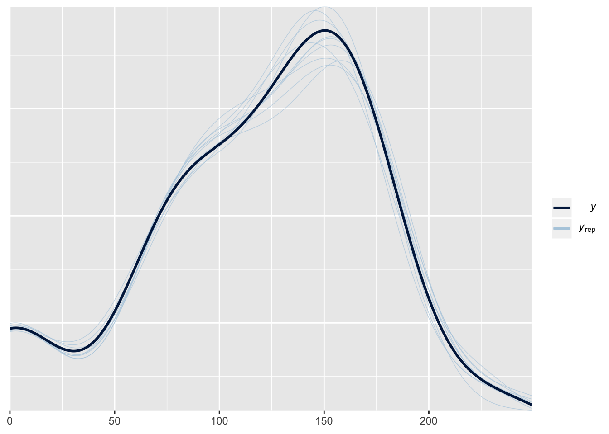
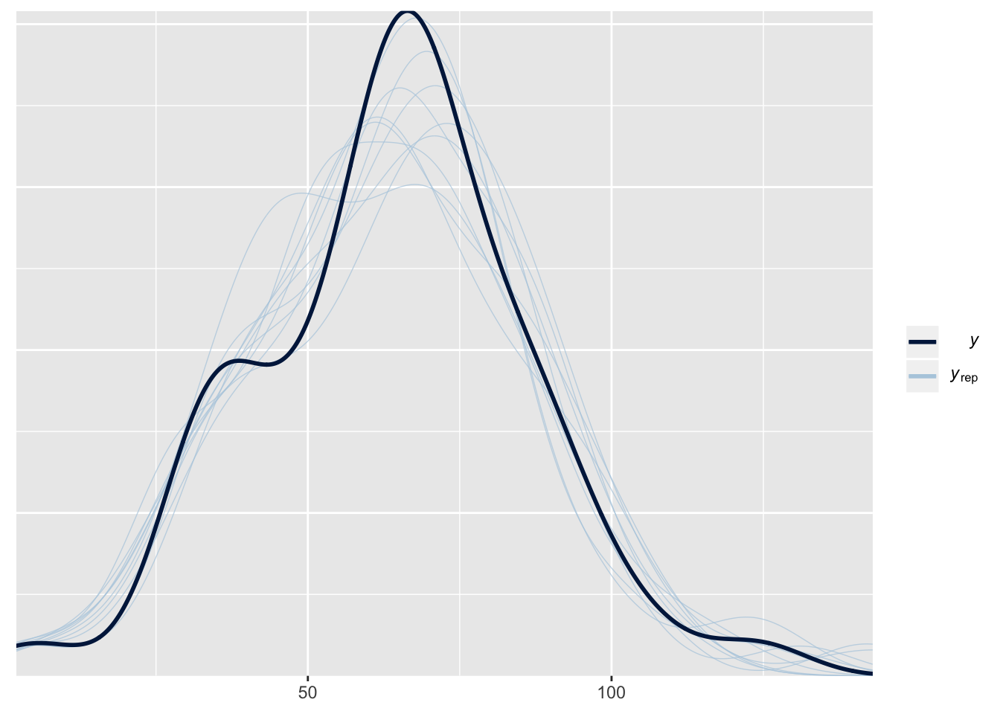
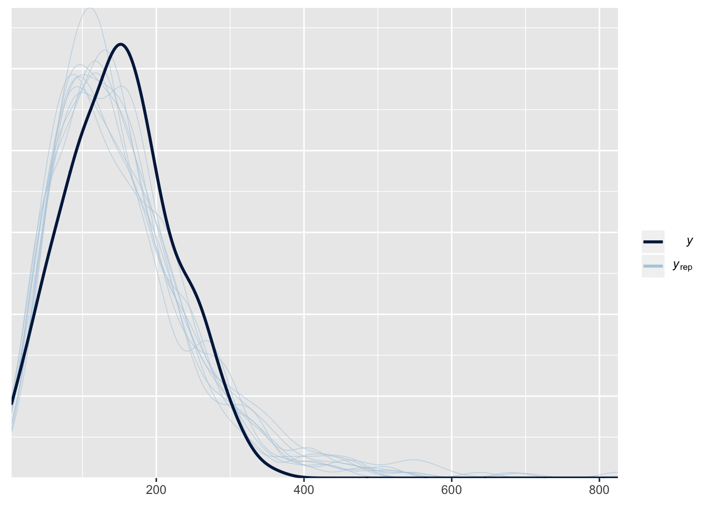
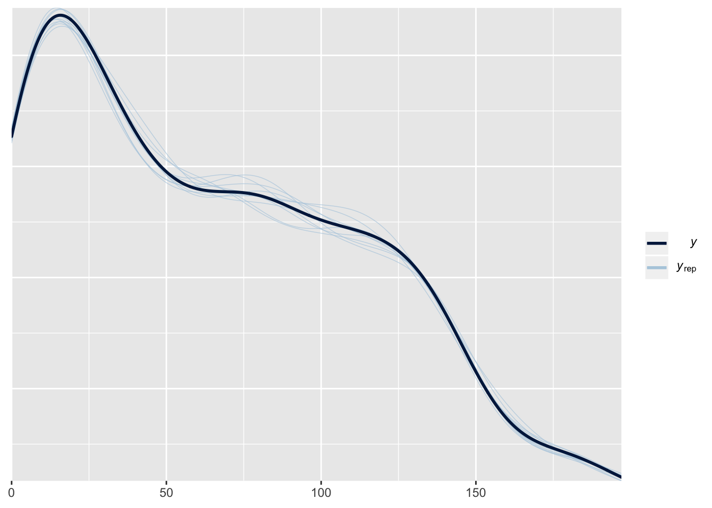
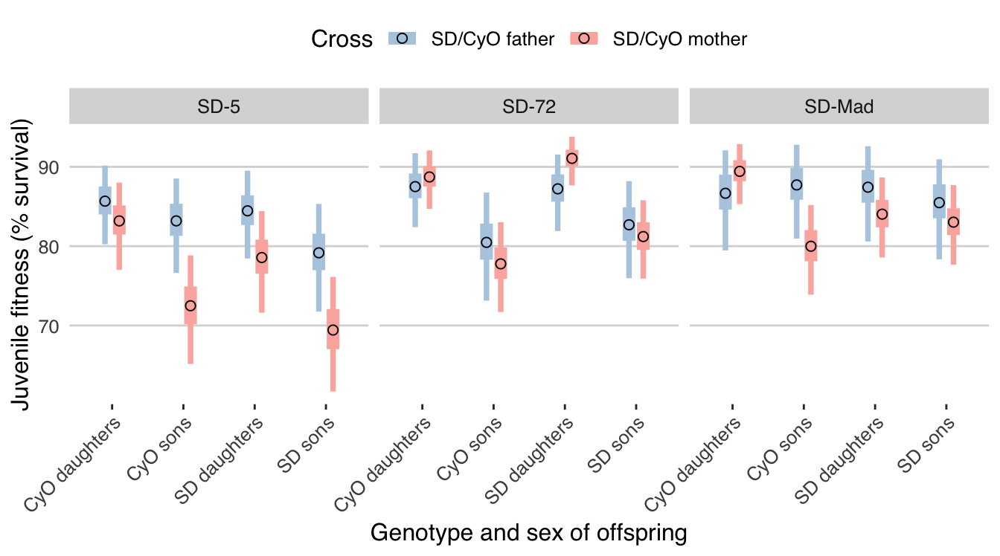
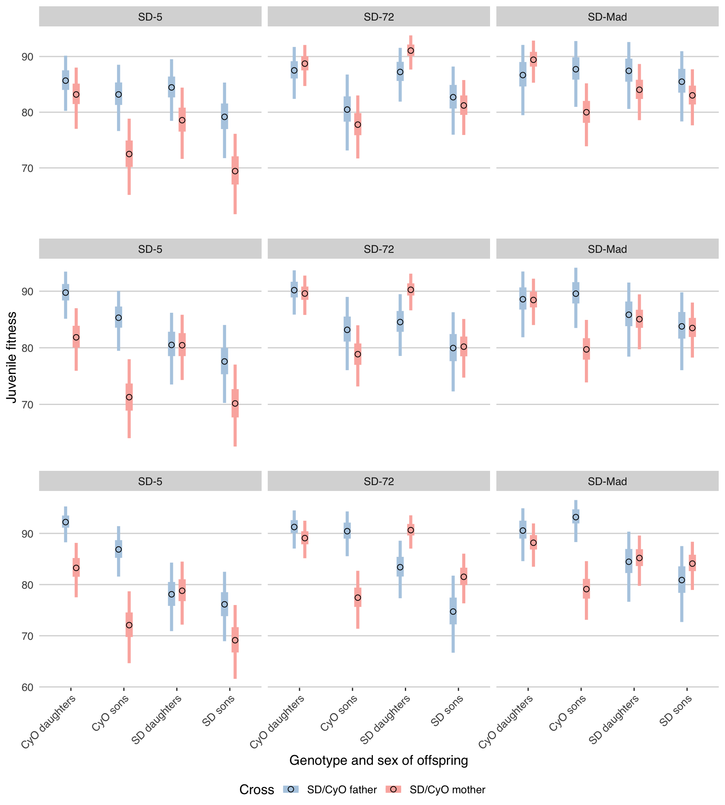

Fitness consequences of the selfish supergene Segregation Distorter
2019-03-12
Last updated: 2019-06-11
Checks: 6 0
Knit directory: fitnessCostSD/
This reproducible R Markdown analysis was created with workflowr (version 1.3.0). The Checks tab describes the reproducibility checks that were applied when the results were created. The Past versions tab lists the development history.
Great! Since the R Markdown file has been committed to the Git repository, you know the exact version of the code that produced these results.
Great job! The global environment was empty. Objects defined in the global environment can affect the analysis in your R Markdown file in unknown ways. For reproduciblity it’s best to always run the code in an empty environment.
The command set.seed(20190312) was run prior to running the code in the R Markdown file. Setting a seed ensures that any results that rely on randomness, e.g. subsampling or permutations, are reproducible.
Great job! Recording the operating system, R version, and package versions is critical for reproducibility.
Nice! There were no cached chunks for this analysis, so you can be confident that you successfully produced the results during this run.
Great! You are using Git for version control. Tracking code development and connecting the code version to the results is critical for reproducibility. The version displayed above was the version of the Git repository at the time these results were generated.
Note that you need to be careful to ensure that all relevant files for the analysis have been committed to Git prior to generating the results (you can use wflow_publish or wflow_git_commit). workflowr only checks the R Markdown file, but you know if there are other scripts or data files that it depends on. Below is the status of the Git repository when the results were generated:
Ignored files:
Ignored: .DS_Store
Ignored: .Rhistory
Ignored: .Rproj.user/
Ignored: data/.DS_Store
Ignored: data/SD_k tests_2018_04_05.xlsx
Ignored: data/clean_data/.DS_Store
Ignored: data/data collection sheet - follow up looking at sex ratio.xlsx
Ignored: data/data collection sheet from Heidi.xlsx
Ignored: data/model_output/
Ignored: docs/.DS_Store
Ignored: docs/figure/SD_costs_analysis.Rmd/
Ignored: docs/figure/evolutionary_simulation_SD.Rmd/
Ignored: manuscript/.DS_Store
Ignored: output/
Unstaged changes:
Modified: figures/fig3.pdf
Note that any generated files, e.g. HTML, png, CSS, etc., are not included in this status report because it is ok for generated content to have uncommitted changes.
These are the previous versions of the R Markdown and HTML files. If you’ve configured a remote Git repository (see ?wflow_git_remote), click on the hyperlinks in the table below to view them.
| File | Version | Author | Date | Message |
|---|---|---|---|---|
| Rmd | 472fa8d | lukeholman | 2019-06-11 | Changes after Tom review |
| html | e3cfdc4 | lukeholman | 2019-03-12 | Build site. |
| Rmd | e8a0b18 | lukeholman | 2019-03-12 | fix |
| html | 861ee2d | lukeholman | 2019-03-12 | Build site. |
| html | 6a50b04 | lukeholman | 2019-03-12 | Build site. |
| Rmd | b92f254 | lukeholman | 2019-03-12 | added raw data |
| html | b92f254 | lukeholman | 2019-03-12 | added raw data |
| html | 9f20dc5 | lukeholman | 2019-03-12 | Build site. |
| Rmd | 555801a | lukeholman | 2019-03-12 | Fixed up supplement |
| html | 555801a | lukeholman | 2019-03-12 | Fixed up supplement |
| html | 36e95d3 | lukeholman | 2019-03-12 | Build site. |
| Rmd | 8d92589 | lukeholman | 2019-03-12 | added supplment |
| html | 8d92589 | lukeholman | 2019-03-12 | added supplment |
| html | e67c963 | lukeholman | 2019-03-12 | Build site. |
| Rmd | cceac7a | lukeholman | 2019-03-12 | Tweak |
| html | ba43211 | lukeholman | 2019-03-12 | Build site. |
| html | 6b03f9c | lukeholman | 2019-03-12 | Build site. |
| Rmd | 2bc25a0 | lukeholman | 2019-03-12 | Added main pages |
Set up for the analysis
Load R packages
packages <- c("dplyr", "brms", "ggplot2", "reshape2", "Cairo", "knitr", "pander", "lazerhawk",
"grid", "gridExtra", "ggthemes", "readr", "tibble", "stringr", "gameofthrones")
shh <- suppressMessages(lapply(packages, library, character.only = TRUE, quietly = TRUE))
nCores <- 1
summarise_brms <- function(brmsfit){
lazerhawk::brms_SummaryTable(brmsfit, astrology = TRUE) %>%
mutate(Covariate = str_replace_all(Covariate, "SDM", "SD-"),
Covariate = str_replace_all(Covariate, "SD-other", "SDMother")) %>%
pander(split.cell = 40, split.table = Inf)
} Load and clean the data
This section also saves a copy of the cleaned data in the directory data/cleaned_data. If you wish to re-use the data, I suggest you use these cleaned files; the factor and level names are more intuitive than in the original data sheets (however, the actual data are identical).
load_and_clean_data <- function(path){
if(path == "data/messy_data/experiment2.csv"){
expt2 <- read_csv(path) %>%
mutate(prop_SD_females = female_SD / (female_SD + female_cyo),
prop_SD_males = male_SD / (male_SD + male_cyo),
prop_males = (male_SD + male_cyo) / (male_SD + male_cyo + female_SD + female_cyo),
starting_number_focal_sex = num_embryos,
SD_offspring = female_SD,
CyO_offspring = female_cyo)
expt2$starting_number_focal_sex[expt2$sex_of_embryos == "male"] <-
expt2$starting_number_focal_sex[expt2$sex_of_embryos == "male"] -
expt2$female_SD[expt2$sex_of_embryos == "male"] - expt2$female_cyo[expt2$sex_of_embryos == "male"]
expt2$starting_number_focal_sex[expt2$sex_of_embryos == "female"] <-
expt2$starting_number_focal_sex[expt2$sex_of_embryos == "female"] -
expt2$male_SD[expt2$sex_of_embryos == "female"] - expt2$male_cyo[expt2$sex_of_embryos == "female"]
expt2$SD_offspring[expt2$sex_of_embryos == "male"] <- expt2$male_SD[expt2$sex_of_embryos == "male"]
expt2$CyO_offspring[expt2$sex_of_embryos == "male"] <- expt2$male_cyo[expt2$sex_of_embryos == "male"]
expt2$starting_number_focal_sex[expt2$starting_number_focal_sex < expt2$SD_focal_sex] <-
expt2$SD_focal_sex[expt2$starting_number_focal_sex < expt2$SD_focal_sex]
expt2$Dead_offspring <- expt2$starting_number_focal_sex - expt2$SD_offspring - expt2$CyO_offspring
expt2$Dead_offspring[expt2$Dead_offspring < 0] <- 0
expt2$starting_number_focal_sex <- with(expt2, SD_offspring + CyO_offspring + Dead_offspring)
expt2 <- expt2 %>%
select(block, SD_parent, sex_of_embryos, SD, starting_number_focal_sex, SD_offspring, CyO_offspring, Dead_offspring) %>%
mutate(vial = 1:n(),
SD_embryos = "to be estimated",
CyO_embryos = "to be estimated",
block = as.numeric(as.factor(block))) %>%
filter(!(SD %in% c("w1118", "LHm")))
write_csv(expt2, path = str_replace(path, "messy", "clean"))
return(expt2)
}
# For experiment 1....
dat <- read_csv(path) %>%
mutate(block = as.character(block),
copies_of_SD = substr(genotype, 2, 2),
parent_with_SD = substr(genotype, 1, 1),
parent_with_SD = replace(parent_with_SD,
parent_with_SD == "M", "Mother"),
parent_with_SD = replace(parent_with_SD,
parent_with_SD == "P", "Father"),
parent_with_SD = replace(parent_with_SD,
parent_with_SD == "A", "Both parents"),
parent_with_SD = replace(parent_with_SD,
parent_with_SD == "N", "Neither parent"),
parent_with_SD = factor(parent_with_SD,
levels = c("Neither parent",
"Father", "Mother",
"Both parents")),
SD = paste("SD-", SD, sep = ""),
SD = replace(SD, SD == "SD-N", "No SD chromosome"),
MotherHasSD = ifelse(parent_with_SD != "Father", 1, 0),
FatherHasSD = ifelse(parent_with_SD != "Mother", 1, 0),
MotherHasSD = replace(MotherHasSD, SD == "No SD chromosome", 0),
FatherHasSD = replace(FatherHasSD, SD == "No SD chromosome", 0),
SD_from_mum = ifelse(MotherHasSD==1 & copies_of_SD=="1", "Yes", "No"),
SD_from_mum = replace(SD_from_mum, FatherHasSD==1 & MotherHasSD==1 & copies_of_SD=="2", "Yes"),
SD_from_dad = ifelse(FatherHasSD == 1 & copies_of_SD == "1", "Yes", "No"),
SD_from_dad = replace(SD_from_dad, FatherHasSD==1 & MotherHasSD==1 & copies_of_SD=="2", "Yes"),
mum_genotype = relevel(as.factor(ifelse(MotherHasSD==1, SD, "wild_type")), ref = "wild_type"),
dad_genotype = relevel(as.factor(ifelse(FatherHasSD==1, SD, "wild_type")), ref = "wild_type"))
if(path == "data/messy_data/male_fitness.csv"){
dat <- dat %>%
mutate(focal.male.fitness = focal_daughters + focal_sons,
rival.male.fitness = rival_daughters + rival_sons,
total = focal.male.fitness + rival.male.fitness,
vial = 1:n())
}
if(path == "data/messy_data/larval_fitness.csv"){
# Note that for 'Mother has SD' crosses (Cross 2), the 'initial_number' of larvae is the maximum possible.
# The real initial number of non-recombinants is probably a bit lower, since the survival rate of the recombinants is probably not 100%
# This means the survival rate in Cross 2 is an under-estimate of the true survival rate.
# For SD-5, it is a very slight underestimate, since SD-5 does not recombine much.
# For the other two SDs, it is a larger underestimate.
dat <- dat %>%
mutate(surviving_females = nonrecombinant_females,
surviving_males = nonrecombinant_males,
survivors = nonrecombinant_females + nonrecombinant_males,
initial_number = number_larvae_in_vial - recombinant_females - recombinant_males,
number_died = initial_number - survivors,
larval_density = as.numeric(scale(number_larvae_in_vial)), # mean-centre the larval density covariate
vial = 1:n(),
total = survivors + number_died) %>%
select(-nonrecombinant_females, -nonrecombinant_males, -recombinant_females, -recombinant_males)
# We never put more than 100 larvae in one vial, so for cases where the initial number was 200, it was 2 vials of 100 each, etc.
dat$larval_density[dat$larval_density > 100] <- 100
# For Cross 1, where both parents have SD, we cannot discriminate larvae with 0 or 1 copies of SD
# (until they become adults and develop eyes)
dat$copies_of_SD[dat$genotype == "A0+A1"] <- "0 or 1"
}
if(path == "data/messy_data/female_fitness.csv"){
dat$vial <- 1:nrow(dat)
}
# 'genotype' variable is a composite of SD genotype and parental origin, used during data collection. Not needed for analysis
dat <- dat %>% select(-genotype)
# save the clean data
write_csv(dat, path = str_replace(path, "messy", "clean"))
dat
}
larvae <- load_and_clean_data("data/messy_data/larval_fitness.csv")
males <- load_and_clean_data("data/messy_data/male_fitness.csv")
females <- load_and_clean_data("data/messy_data/female_fitness.csv")
expt2 <- load_and_clean_data("data/messy_data/experiment2.csv") Summary statistics for the four response variables
Larval survival data
Table S1: Number and percentage of L1 larvae surviving to adulthood for each SD genotype and cross type.
tidy_names <- function(df){
df <- as.data.frame(df)
names(df) <- str_replace_all(names(df), "_", " ")
names(df) <- str_replace_all(names(df), "[.]", " ")
names(df) <- sapply(names(df), function(x) {
if(substr(x,1,2) == "n ") return(x)
substr(x,1,1) <- toupper(substr(x,1,1))
x
})
names(df) <- str_replace_all(names(df), "[Pp]ercent", "%")
names(df) <- str_replace_all(names(df), "Number of", "n")
df
}
tab_S1 <- larvae %>%
group_by(SD, copies_of_SD, parent_with_SD) %>%
summarise(number_larvae_counted = sum(survivors + number_died),
number_of_survivors = sum(survivors),
percent_surviving = 100 * (number_of_survivors / number_larvae_counted)) %>%
mutate(percent_surviving = format(round(percent_surviving, 1), nsmall = 1)) %>%
tidy_names()
saveRDS(tab_S1, file = "output/tab_S1.rds")
tab_S1 %>% pander(split.cell = 40, split.table = Inf)| SD | Copies of SD | Parent with SD | Number larvae counted | n survivors | % surviving |
|---|---|---|---|---|---|
| No SD chromosome | 0 | Neither parent | 600 | 495 | 82.5 |
| SD-5 | 0 | Father | 113 | 89 | 78.8 |
| SD-5 | 0 | Mother | 459 | 408 | 88.9 |
| SD-5 | 0 or 1 | Both parents | 700 | 520 | 74.3 |
| SD-5 | 1 | Father | 563 | 412 | 73.2 |
| SD-5 | 1 | Mother | 494 | 415 | 84.0 |
| SD-5 | 2 | Both parents | 40 | 0 | 0.0 |
| SD-72 | 0 | Father | 287 | 226 | 78.7 |
| SD-72 | 0 | Mother | 396 | 333 | 84.1 |
| SD-72 | 0 or 1 | Both parents | 700 | 542 | 77.4 |
| SD-72 | 1 | Father | 600 | 477 | 79.5 |
| SD-72 | 1 | Mother | 423 | 342 | 80.9 |
| SD-72 | 2 | Both parents | 600 | 0 | 0.0 |
| SD-Mad | 0 | Father | 296 | 239 | 80.7 |
| SD-Mad | 0 | Mother | 371 | 279 | 75.2 |
| SD-Mad | 0 or 1 | Both parents | 700 | 558 | 79.7 |
| SD-Mad | 1 | Father | 600 | 462 | 77.0 |
| SD-Mad | 1 | Mother | 436 | 320 | 73.4 |
| SD-Mad | 2 | Both parents | 585 | 413 | 70.6 |
Adult sex ratio
Table S2: Number and percentage of male and female adults emerging from the juvenile fitness assay vials.
tab_S2 <- larvae %>%
group_by(SD, copies_of_SD, parent_with_SD) %>%
summarise(n.males = sum(surviving_males),
n.females = sum(surviving_females),
n.total = sum(survivors),
percent.male = format(round(100 * sum(surviving_males) / n.total, 1), nsmall = 1)) %>%
tidy_names()
saveRDS(tab_S2, file = "output/tab_S2.rds")
tab_S2 %>% pander(split.cell = 40, split.table = Inf)| SD | Copies of SD | Parent with SD | n males | n females | n total | % male |
|---|---|---|---|---|---|---|
| No SD chromosome | 0 | Neither parent | 267 | 228 | 495 | 53.9 |
| SD-5 | 0 | Father | 48 | 41 | 89 | 53.9 |
| SD-5 | 0 | Mother | 206 | 202 | 408 | 50.5 |
| SD-5 | 0 or 1 | Both parents | 239 | 281 | 520 | 46.0 |
| SD-5 | 1 | Father | 196 | 216 | 412 | 47.6 |
| SD-5 | 1 | Mother | 193 | 222 | 415 | 46.5 |
| SD-5 | 2 | Both parents | 0 | 0 | 0 | NaN |
| SD-72 | 0 | Father | 105 | 121 | 226 | 46.5 |
| SD-72 | 0 | Mother | 169 | 164 | 333 | 50.8 |
| SD-72 | 0 or 1 | Both parents | 272 | 270 | 542 | 50.2 |
| SD-72 | 1 | Father | 233 | 244 | 477 | 48.8 |
| SD-72 | 1 | Mother | 186 | 156 | 342 | 54.4 |
| SD-72 | 2 | Both parents | 0 | 0 | 0 | NaN |
| SD-Mad | 0 | Father | 102 | 137 | 239 | 42.7 |
| SD-Mad | 0 | Mother | 145 | 134 | 279 | 52.0 |
| SD-Mad | 0 or 1 | Both parents | 253 | 305 | 558 | 45.3 |
| SD-Mad | 1 | Father | 190 | 272 | 462 | 41.1 |
| SD-Mad | 1 | Mother | 184 | 136 | 320 | 57.5 |
| SD-Mad | 2 | Both parents | 209 | 204 | 413 | 50.6 |
Male fitness data
Table S3: Average relative fitness of adult males for each SD genotype and cross type, expressed as the average proportion of offspring sired. The last two columns give the sample size in terms of number of vials (each of which contained 5 focal males), and number of males.
SE <- function(x) sd(x) / sqrt(length(x))
tab_S3 <- males %>%
group_by(SD, copies_of_SD, parent_with_SD) %>%
summarise(average_relative_fitness = mean(focal.male.fitness / (focal.male.fitness + rival.male.fitness)),
SE = SE(focal.male.fitness / (focal.male.fitness + rival.male.fitness)),
number_of_vials = n(),
number_of_males = number_of_vials * 5) %>%
mutate(average_relative_fitness = format(round(average_relative_fitness, 2), nsmall = 2),
SE = format(round(SE, 3), nsmall = 3)) %>%
tidy_names()
saveRDS(tab_S3, file = "output/tab_S3.rds")
tab_S3 %>% pander(split.cell = 40, split.table = Inf)| SD | Copies of SD | Parent with SD | Average relative fitness | SE | n vials | n males |
|---|---|---|---|---|---|---|
| No SD chromosome | 0 | Neither parent | 0.79 | 0.040 | 13 | 65 |
| SD-5 | 0 | Father | 0.68 | 0.147 | 5 | 25 |
| SD-5 | 0 | Mother | 0.82 | 0.045 | 17 | 85 |
| SD-5 | 0 | Both parents | 0.59 | NA | 1 | 5 |
| SD-5 | 1 | Father | 0.14 | 0.055 | 18 | 90 |
| SD-5 | 1 | Mother | 0.32 | 0.072 | 12 | 60 |
| SD-5 | 1 | Both parents | 0.39 | 0.074 | 13 | 65 |
| SD-72 | 0 | Father | 0.88 | 0.027 | 16 | 80 |
| SD-72 | 0 | Mother | 0.77 | 0.054 | 13 | 65 |
| SD-72 | 0 | Both parents | 0.79 | NA | 1 | 5 |
| SD-72 | 1 | Father | 0.76 | 0.045 | 18 | 90 |
| SD-72 | 1 | Mother | 0.80 | 0.039 | 17 | 85 |
| SD-72 | 1 | Both parents | 0.67 | 0.051 | 19 | 95 |
| SD-Mad | 0 | Father | 0.75 | 0.055 | 14 | 70 |
| SD-Mad | 0 | Mother | 0.75 | 0.069 | 11 | 55 |
| SD-Mad | 0 | Both parents | 0.82 | 0.078 | 5 | 25 |
| SD-Mad | 1 | Father | 0.87 | 0.028 | 18 | 90 |
| SD-Mad | 1 | Mother | 0.81 | 0.037 | 17 | 85 |
| SD-Mad | 1 | Both parents | 0.75 | 0.053 | 18 | 90 |
| SD-Mad | 2 | Both parents | 0.19 | 0.072 | 14 | 70 |
Female fitness data
Table S4: Average fecundity of adult females for each SD genotype and cross type. The last two columns give the sample size in terms of number of oviposition vials (each of which contained up to 5 focal females), and number of males.
tab_S4 <- females %>%
mutate(larvae_per_female = larvae_produced / number_of_laying_females) %>%
group_by(SD, copies_of_SD, parent_with_SD) %>%
summarise(average_fecundity = mean(larvae_per_female),
SE = SE(larvae_per_female),
number_of_vials = n(),
number_of_females = sum(number_of_laying_females)) %>%
mutate(average_fecundity = format(round(average_fecundity, 2), nsmall = 2),
SE = format(round(SE, 3), nsmall = 3)) %>%
tidy_names()
saveRDS(tab_S4, file = "output/tab_S4.rds")
tab_S4 %>% pander(split.cell = 40, split.table = Inf)| SD | Copies of SD | Parent with SD | Average fecundity | SE | n vials | n females |
|---|---|---|---|---|---|---|
| No SD chromosome | 0 | Neither parent | 26.55 | 3.874 | 10 | 48 |
| SD-5 | 0 | Father | 25.06 | 8.127 | 6 | 28 |
| SD-5 | 0 | Mother | 41.13 | 3.700 | 15 | 71 |
| SD-5 | 0 | Both parents | 24.95 | 3.767 | 5 | 22 |
| SD-5 | 1 | Father | 28.88 | 3.337 | 12 | 55 |
| SD-5 | 1 | Mother | 29.74 | 3.118 | 16 | 69 |
| SD-5 | 1 | Both parents | 26.83 | 2.583 | 15 | 67 |
| SD-72 | 0 | Father | 32.68 | 3.258 | 14 | 65 |
| SD-72 | 0 | Mother | 35.10 | 3.023 | 15 | 68 |
| SD-72 | 0 | Both parents | 22.53 | 6.671 | 3 | 15 |
| SD-72 | 1 | Father | 33.97 | 2.743 | 16 | 77 |
| SD-72 | 1 | Mother | 41.90 | 3.792 | 14 | 68 |
| SD-72 | 1 | Both parents | 31.85 | 2.885 | 15 | 73 |
| SD-Mad | 0 | Father | 28.25 | 3.769 | 16 | 79 |
| SD-Mad | 0 | Mother | 44.71 | 3.723 | 13 | 65 |
| SD-Mad | 0 | Both parents | 16.50 | 1.762 | 3 | 14 |
| SD-Mad | 1 | Father | 36.85 | 3.968 | 16 | 77 |
| SD-Mad | 1 | Mother | 40.58 | 4.602 | 14 | 64 |
| SD-Mad | 1 | Both parents | 34.88 | 3.478 | 16 | 76 |
| SD-Mad | 2 | Both parents | 11.26 | 1.631 | 17 | 83 |
Experiment 2 larval survival data
Table S5: Number and percentage of L1 larvae surviving to adulthood in Experiment 2, for each SD genotype, cross type, and offspring sex.
tab_S5 <- expt2 %>%
rename(parent_with_SD = SD_parent, offspring_sex = sex_of_embryos) %>%
mutate(SD_embryos = SD_offspring + rbinom(n(), Dead_offspring, 0.5),
CyO_embryos = starting_number_focal_sex - SD_embryos,
parent_with_SD = ifelse(parent_with_SD == "dad", "Father", "Mother"),
offspring_sex = ifelse(offspring_sex == "female", "Female", "Male")) %>%
group_by(SD, parent_with_SD, offspring_sex) %>%
summarise(percent_surviving_SD_larvae = mean(100 * SD_offspring / SD_embryos),
percent_surviving_CyO_larvae = mean(100 * CyO_offspring / CyO_embryos),
n_larvae_counted = sum(starting_number_focal_sex),
n_crosses = n()) %>%
mutate(percent_surviving_SD_larvae = format(round(percent_surviving_SD_larvae, 1), nsmall = 1),
percent_surviving_CyO_larvae = format(round(percent_surviving_CyO_larvae, 1), nsmall = 1)) %>%
tidy_names()
saveRDS(tab_S5, file = "output/tab_S5.rds")
tab_S5 %>% pander(split.cell = 40, split.table = Inf)| SD | Parent with SD | Offspring sex | % surviving SD larvae | % surviving CyO larvae | n larvae counted | n crosses |
|---|---|---|---|---|---|---|
| SD-5 | Father | Female | 83.4 | 83.8 | 763 | 16 |
| SD-5 | Father | Male | 79.0 | 79.3 | 727 | 17 |
| SD-5 | Mother | Female | 76.4 | 81.9 | 871 | 18 |
| SD-5 | Mother | Male | 70.8 | 67.8 | 972 | 20 |
| SD-72 | Father | Female | 85.5 | 85.9 | 744 | 16 |
| SD-72 | Father | Male | 81.0 | 78.6 | 615 | 15 |
| SD-72 | Mother | Female | 90.2 | 87.4 | 1123 | 23 |
| SD-72 | Mother | Male | 78.9 | 76.8 | 1186 | 24 |
| SD-Mad | Father | Female | 87.2 | 83.9 | 457 | 10 |
| SD-Mad | Father | Male | 87.8 | 83.1 | 480 | 11 |
| SD-Mad | Mother | Female | 84.4 | 85.7 | 942 | 20 |
| SD-Mad | Mother | Male | 82.3 | 78.4 | 1010 | 21 |
Analysis of L1 larva-to-adult survival
Run a Bayesian binomial generalised linear mixed model
if(!file.exists("data/model_output/larvae_brms.rds")){
larvae_brms <- brm(survivors | trials(total) ~ larval_density + SD * copies_of_SD * parent_with_SD + (1 | vial),
family = binomial,
data = larvae,
iter = 4000, chains = 4, cores = nCores,
control = list(adapt_delta = 0.99, max_treedepth = 15),
prior = prior(normal(0, 5), class = "b"))
saveRDS(larvae_brms, "data/model_output/larvae_brms.rds")
} else larvae_brms <- readRDS("data/model_output/larvae_brms.rds")Check a diagnostic plot of the model
This plot shows the frequency distribution of the original data (black line), along with predicted data that were computed using 10 random samples from the posterior of the model parameters. The posterior predicted values closely match the originals, suggesting that the model is approximating the data reasonably well.
pp_check(larvae_brms)
Inspect the model summary
This summary shows the median, error, and 95% CIs for the posterior for all the fixed effects. This table is difficult to interpret and not very informative, but is presented here for completeness.
summarise_brms(larvae_brms)| Covariate | Estimate | Est.Error | l-95% CI | u-95% CI | Notable |
|---|---|---|---|---|---|
| Intercept | 1.64 | 0.34 | 0.97 | 2.32 | * |
| larval_density | -0.04 | 0.17 | -0.37 | 0.31 | |
| SDSD-5 | -0.57 | 3.18 | -6.69 | 5.57 | |
| SDSD-72 | -0.79 | 3.18 | -7.07 | 5.43 | |
| SDSD-Mad | 0.19 | 3.17 | -6.16 | 6.49 | |
| copies_of_SD0or1 | 0.89 | 4.29 | -7.55 | 9.18 | |
| copies_of_SD1 | -0.07 | 3.55 | -7.08 | 6.88 | |
| copies_of_SD2 | -2.56 | 4.31 | -11.00 | 5.91 | |
| parent_with_SDFather | 0.04 | 3.06 | -5.90 | 5.98 | |
| parent_with_SDMother | 0.35 | 3.04 | -5.64 | 6.33 | |
| parent_with_SDBothparents | -1.75 | 4.10 | -9.63 | 6.33 | |
| SDSD-5:copies_of_SD0or1 | 0.78 | 4.29 | -7.69 | 9.14 | |
| SDSD-72:copies_of_SD0or1 | 1.04 | 4.40 | -7.63 | 9.81 | |
| SDSD-Mad:copies_of_SD0or1 | -0.89 | 4.31 | -9.41 | 7.68 | |
| SDSD-5:copies_of_SD1 | -0.16 | 3.55 | -7.05 | 6.74 | |
| SDSD-72:copies_of_SD1 | 0.08 | 3.53 | -6.79 | 6.97 | |
| SDSD-Mad:copies_of_SD1 | -0.03 | 3.54 | -6.97 | 6.90 | |
| SDSD-5:copies_of_SD2 | -2.16 | 4.53 | -11.22 | 6.71 | |
| SDSD-72:copies_of_SD2 | -2.78 | 4.65 | -11.86 | 6.34 | |
| SDSD-Mad:copies_of_SD2 | 2.35 | 4.41 | -6.37 | 11.11 | |
| SDSD-5:parent_with_SDFather | 0.03 | 3.42 | -6.59 | 6.91 | |
| SDSD-72:parent_with_SDFather | 0.37 | 3.46 | -6.53 | 7.19 | |
| SDSD-Mad:parent_with_SDFather | -0.45 | 3.45 | -7.31 | 6.26 | |
| SDSD-5:parent_with_SDMother | 0.73 | 3.42 | -5.87 | 7.58 | |
| SDSD-72:parent_with_SDMother | 0.51 | 3.32 | -6.05 | 7.12 | |
| SDSD-Mad:parent_with_SDMother | -0.89 | 3.37 | -7.41 | 5.86 | |
| SDSD-5:parent_with_SDBothparents | -1.38 | 4.16 | -9.58 | 6.70 | |
| SDSD-72:parent_with_SDBothparents | -1.65 | 4.26 | -9.96 | 6.89 | |
| SDSD-Mad:parent_with_SDBothparents | 1.37 | 4.13 | -6.77 | 9.69 | |
| copies_of_SD0or1:parent_with_SDFather | -0.01 | 5.11 | -10.16 | 10.02 | |
| copies_of_SD1:parent_with_SDFather | 0.03 | 3.54 | -6.90 | 6.94 | |
| copies_of_SD2:parent_with_SDFather | 0.11 | 4.99 | -9.60 | 9.91 | |
| copies_of_SD0or1:parent_with_SDMother | -0.04 | 4.91 | -9.60 | 9.63 | |
| copies_of_SD1:parent_with_SDMother | -0.13 | 3.63 | -7.24 | 7.09 | |
| copies_of_SD2:parent_with_SDMother | 0.06 | 5.06 | -9.76 | 9.81 | |
| copies_of_SD0or1:parent_with_SDBothparents | 0.89 | 4.23 | -7.16 | 9.22 | |
| copies_of_SD1:parent_with_SDBothparents | 0.08 | 4.90 | -9.61 | 9.82 | |
| copies_of_SD2:parent_with_SDBothparents | -2.68 | 4.37 | -11.18 | 5.82 | |
| SDSD-5:copies_of_SD0or1:parent_with_SDFather | 0.01 | 4.93 | -9.76 | 9.63 | |
| SDSD-72:copies_of_SD0or1:parent_with_SDFather | -0.03 | 5.09 | -10.10 | 10.02 | |
| SDSD-Mad:copies_of_SD0or1:parent_with_SDFather | 0.00 | 5.08 | -9.93 | 9.91 | |
| SDSD-5:copies_of_SD1:parent_with_SDFather | 0.06 | 3.53 | -6.84 | 6.90 | |
| SDSD-72:copies_of_SD1:parent_with_SDFather | 0.11 | 3.55 | -6.86 | 7.07 | |
| SDSD-Mad:copies_of_SD1:parent_with_SDFather | -0.11 | 3.57 | -7.17 | 6.86 | |
| SDSD-5:copies_of_SD2:parent_with_SDFather | 0.09 | 5.06 | -9.60 | 9.95 | |
| SDSD-72:copies_of_SD2:parent_with_SDFather | 0.04 | 4.94 | -9.58 | 9.60 | |
| SDSD-Mad:copies_of_SD2:parent_with_SDFather | -0.01 | 4.96 | -9.76 | 9.88 | |
| SDSD-5:copies_of_SD0or1:parent_with_SDMother | 0.03 | 5.09 | -9.86 | 10.08 | |
| SDSD-72:copies_of_SD0or1:parent_with_SDMother | 0.02 | 4.96 | -9.67 | 9.71 | |
| SDSD-Mad:copies_of_SD0or1:parent_with_SDMother | -0.03 | 4.97 | -9.89 | 9.64 | |
| SDSD-5:copies_of_SD1:parent_with_SDMother | -0.14 | 3.60 | -7.19 | 6.93 | |
| SDSD-72:copies_of_SD1:parent_with_SDMother | -0.10 | 3.64 | -7.21 | 7.11 | |
| SDSD-Mad:copies_of_SD1:parent_with_SDMother | 0.12 | 3.58 | -6.92 | 7.18 | |
| SDSD-5:copies_of_SD2:parent_with_SDMother | 0.01 | 4.86 | -9.39 | 9.50 | |
| SDSD-72:copies_of_SD2:parent_with_SDMother | -0.02 | 5.06 | -9.93 | 9.87 | |
| SDSD-Mad:copies_of_SD2:parent_with_SDMother | 0.04 | 5.02 | -9.64 | 9.90 | |
| SDSD-5:copies_of_SD0or1:parent_with_SDBothparents | 0.76 | 4.26 | -7.48 | 8.94 | |
| SDSD-72:copies_of_SD0or1:parent_with_SDBothparents | 0.99 | 4.41 | -7.54 | 9.71 | |
| SDSD-Mad:copies_of_SD0or1:parent_with_SDBothparents | -0.85 | 4.30 | -9.30 | 7.38 | |
| SDSD-5:copies_of_SD1:parent_with_SDBothparents | -0.05 | 4.89 | -9.48 | 9.44 | |
| SDSD-72:copies_of_SD1:parent_with_SDBothparents | 0.09 | 5.12 | -9.96 | 10.17 | |
| SDSD-Mad:copies_of_SD1:parent_with_SDBothparents | 0.00 | 4.97 | -9.69 | 9.78 | |
| SDSD-5:copies_of_SD2:parent_with_SDBothparents | -2.17 | 4.58 | -11.16 | 6.77 | |
| SDSD-72:copies_of_SD2:parent_with_SDBothparents | -2.80 | 4.54 | -11.78 | 5.99 | |
| SDSD-Mad:copies_of_SD2:parent_with_SDBothparents | 2.32 | 4.36 | -6.35 | 10.75 |
Hypothesis testing
Table S6: The results of hypothesis tests computed using the model of larval survival in Experiment 1. Each row gives the posterior estimate of a difference in means, such that the estimate is positive if mean 1 is larger than mean 2, and negative otherwise (expressed in % larval survival). The mean 1 and mean 2 columns list the parent which had SD (mother, father, or both), followed by the number of SD alleles present in the offspring (0, 1 or 2). The Posterior probability column gives the probability that the mean with the smaller point estimate is actually larger than the other mean, analagously to a one-tailed p-value. The Evidence ratio (ER) column gives the ratio of evidence, such that ER = 5 means that it is 5 times more likely that the mean with the smaller point estimate really is the smaller one. Asterisks highlight rows where the posterior probability is less than 0.05.
# Function to compute posterior difference in means, with the posterior_probability of the smaller mean actually being the larger one (plus the larger evidence ratio, e.g. ER = 10 means it's 10x more likely the smaller mean really is smaller not larger, ER=1 means it's equally likely the smaller one is actually larger)
compare <- function(mean1, mean2){
difference <- mean1 - mean2
prob_less <- hypothesis(data.frame(x = difference), "x < 0")$hypothesis
prob_more <- hypothesis(data.frame(x = difference), "x > 0")$hypothesis
hypothesis(data.frame(x = difference), "x = 0")$hypothesis %>%
mutate(Posterior_probability = min(c(prob_less$Post.Prob, prob_more$Post.Prob)),
Evidence_ratio = max(c(prob_less$Evid.Ratio, prob_more$Evid.Ratio)))
}
hypothesis_tests <- function(model, dat, SR = FALSE, divisor = NULL){
SDs <- c("SD-5", "SD-72", "SD-Mad")
new <- dat %>%
select(SD, copies_of_SD, MotherHasSD, FatherHasSD, SD_from_mum,
SD_from_dad, mum_genotype, dad_genotype, parent_with_SD) %>%
distinct() %>%
arrange(SD, copies_of_SD, MotherHasSD, FatherHasSD, SD_from_mum,
SD_from_dad, mum_genotype, dad_genotype) %>%
mutate(total = 100,
number_of_laying_females = 5,
larval_density = 0,
copies_of_SD = as.character(copies_of_SD),
i = 1:n(),
parent = ifelse(FatherHasSD == 1, "B", "M"),
parent = replace(parent, MotherHasSD == 0, "F"))
SD5 <- new %>% filter(SD == "SD-5")
SD72 <- new %>% filter(SD == "SD-72")
SDMad <- new %>% filter(SD == "SD-Mad")
pred <- fitted(model, re_formula = NA,
newdata = new,
summary = FALSE)
if(!is.null(divisor)) pred <- pred / divisor
control_0SD_neither <- pred[, new %>% filter(SD == "No SD chromosome") %>% pull(i)]
SD5_0SD_mother <- pred[, SD5 %>% filter(copies_of_SD == "0" & parent == "M") %>% pull(i)]
SD5_1SD_mother <- pred[, SD5 %>% filter(copies_of_SD == "1" & parent == "M") %>% pull(i)]
SD5_0SD_father <- pred[, SD5 %>% filter(copies_of_SD == "0" & parent == "F") %>% pull(i)]
SD5_1SD_father <- pred[, SD5 %>% filter(copies_of_SD == "1" & parent == "F") %>% pull(i)]
SD72_0SD_mother <- pred[, SD72 %>% filter(copies_of_SD == "0" & parent == "M") %>% pull(i)]
SD72_1SD_mother <- pred[, SD72 %>% filter(copies_of_SD == "1" & parent == "M") %>% pull(i)]
SD72_0SD_father <- pred[, SD72 %>% filter(copies_of_SD == "0" & parent == "F") %>% pull(i)]
SD72_1SD_father <- pred[, SD72 %>% filter(copies_of_SD == "1" & parent == "F") %>% pull(i)]
SDMad_0SD_mother <- pred[, SDMad %>% filter(copies_of_SD == "0" & parent == "M") %>% pull(i)]
SDMad_1SD_mother <- pred[, SDMad %>% filter(copies_of_SD == "1" & parent == "M") %>% pull(i)]
SDMad_0SD_father <- pred[, SDMad %>% filter(copies_of_SD == "0" & parent == "F") %>% pull(i)]
SDMad_1SD_father <- pred[, SDMad %>% filter(copies_of_SD == "1" & parent == "F") %>% pull(i)]
SDMad_1SD_both <- pred[, SDMad %>% filter(copies_of_SD %in% c("0 or 1", "1") & parent == "B") %>% pull(i)]
SDMad_2 <- pred[, SDMad %>% filter(copies_of_SD == "2") %>% pull(i)]
# For larvae data only, we also have observations of SD-5 and SD-Mad homozygotes
if(sum(new$copies_of_SD == "2") > 1){
SD5_1SD_both <- pred[, SD5 %>% filter(copies_of_SD %in% c("0 or 1", "1") & parent == "B") %>% pull(i)]
SD72_1SD_both <- pred[, SD72 %>% filter(copies_of_SD %in% c("0 or 1", "1") & parent == "B") %>% pull(i)]
SD5_2 <- pred[, SD5 %>% filter(copies_of_SD == "2") %>% pull(i)]
SD72_2 <- pred[, SD72 %>% filter(copies_of_SD == "2") %>% pull(i)]
two_compare <- data.frame(
SD = SDs,
Mean_1 = rep(paste("Both parents,", ifelse("0 or 1" %in% SD5$copies_of_SD, "0 or 1", "1")), 3),
Mean_2 = rep("Both parents, 2", 3),
rbind(
compare(SD5_1SD_both, SD5_2),
compare(SD72_1SD_both, SD72_2),
compare(SDMad_1SD_both, SDMad_2)
)
)
} else { # for non-larva data
two_compare <- data.frame(SD = "SD-Mad",
Mean_1 = "Both parents, 1",
Mean_2 = "Both parents, 2",
compare(SDMad_1SD_both, SDMad_2)) # CONTROLS HERE
}
if("0 or 1" %in% new$copies_of_SD){
SD5_0or1 <- pred[, SD5 %>% filter(copies_of_SD == "0 or 1") %>% pull(i)]
SD72_0or1 <- pred[, SD72 %>% filter(copies_of_SD == "0 or 1") %>% pull(i)]
SDMad_0or1 <- pred[, SDMad %>% filter(copies_of_SD == "0 or 1") %>% pull(i)]
}
rbind(
data.frame(
SD = rep(SDs, 6),
Mean_1 = c(rep("Neither, 0", 6), rep("Mother, 0", 3), rep("Mother, 1", 3), rep("Mother, 0", 3), rep("Father, 0", 3)),
Mean_2 = c(rep("Father, 0", 3), rep("Mother, 0", 3),
rep("Father, 0", 3), rep("Father, 1", 3), rep("Mother, 1", 3), rep("Father, 1", 3)),
rbind(
compare(control_0SD_neither, SD5_0SD_father), # controls vs 0 SD individuals
compare(control_0SD_neither, SD72_0SD_father),
compare(control_0SD_neither, SDMad_0SD_father),
compare(control_0SD_neither, SD5_0SD_mother),
compare(control_0SD_neither, SD72_0SD_mother),
compare(control_0SD_neither, SDMad_0SD_mother),
compare(SD5_0SD_mother, SD5_0SD_father), # parental effects on 0 SD individuals
compare(SD72_0SD_mother, SD72_0SD_father),
compare(SDMad_0SD_mother, SDMad_0SD_father),
compare(SD5_1SD_mother, SD5_1SD_father), # parental effects on 1 SD individuals
compare(SD72_1SD_mother, SD72_1SD_father),
compare(SDMad_1SD_mother, SDMad_1SD_father),
compare(SD5_0SD_mother, SD5_1SD_mother), # effect of inheriting SD, from the mother
compare(SD72_0SD_mother, SD72_1SD_mother),
compare(SDMad_0SD_mother, SDMad_1SD_mother),
compare(SD5_0SD_father, SD5_1SD_father), # effect of inheriting SD, from the father
compare(SD72_0SD_father, SD72_1SD_father),
compare(SDMad_0SD_father, SDMad_1SD_father)
)),
two_compare) %>%
select(-Hypothesis, -Evid.Ratio, -Post.Prob, -Star) %>%
mutate(Notable = ifelse(Posterior_probability < 0.05, "*", ""))
}
clean_table <- function(tabl){
cols <- c("Trait", "SD", "Comparison", "Difference", "Error", "Posterior_probability")
if(!("Trait" %in% names(tabl))){
cols <- cols[cols != "Trait"]
}
tabl <- mutate(tabl,
Estimate = format(round(Estimate, 1), nsmall = 1),
Est.Error = format(round(Est.Error, 1), nsmall = 1),
CI.Lower = format(round(CI.Lower, 1), nsmall = 1),
CI.Upper = format(round(CI.Upper, 1), nsmall = 1),
Evidence_ratio = format(round(Evidence_ratio, 1), nsmall = 1),
Difference = paste(Estimate, " (", CI.Lower, " to ", CI.Upper, ")", sep = ""),
Comparison = paste(Mean_1, "-", Mean_2),
Error = Est.Error) %>%
select(!! cols)
tabl %>% tidy_names()
}
tests1 <- hypothesis_tests(larvae_brms, larvae)
tab_S6 <- tests1 %>% clean_table()
saveRDS(tab_S6, file = "output/tab_S6.rds")
tab_S6 %>% pander(split.cell = 40, split.table = Inf)| SD | Comparison | Difference | Error | Posterior probability |
|---|---|---|---|---|
| SD-5 | Neither, 0 - Father, 0 | 8.9 (-11.6 to 34.9) | 11.8 | 0.2254 |
| SD-72 | Neither, 0 - Father, 0 | 6.0 (-10.5 to 24.3) | 8.9 | 0.2464 |
| SD-Mad | Neither, 0 - Father, 0 | 3.5 (-12.5 to 21.0) | 8.4 | 0.3415 |
| SD-5 | Neither, 0 - Mother, 0 | -5.8 (-18.1 to 5.3) | 5.9 | 0.1557 |
| SD-72 | Neither, 0 - Mother, 0 | -0.9 (-14.0 to 12.1) | 6.6 | 0.4435 |
| SD-Mad | Neither, 0 - Mother, 0 | 5.4 ( -9.3 to 20.0) | 7.3 | 0.2181 |
| SD-5 | Mother, 0 - Father, 0 | 14.7 ( -2.8 to 39.3) | 10.7 | 0.0575 |
| SD-72 | Mother, 0 - Father, 0 | 6.9 ( -9.6 to 25.0) | 8.8 | 0.2145 |
| SD-Mad | Mother, 0 - Father, 0 | -1.9 (-18.1 to 15.9) | 8.6 | 0.3991 |
| SD-5 | Mother, 1 - Father, 1 | 10.6 ( -4.4 to 26.4) | 7.8 | 0.07975 |
| SD-72 | Mother, 1 - Father, 1 | 1.2 (-13.1 to 15.4) | 7.2 | 0.429 |
| SD-Mad | Mother, 1 - Father, 1 | -1.0 (-17.9 to 15.2) | 8.4 | 0.4487 |
| SD-5 | Mother, 0 - Mother, 1 | 5.6 ( -5.2 to 17.4) | 5.7 | 0.156 |
| SD-72 | Mother, 0 - Mother, 1 | 3.0 (-10.2 to 16.9) | 6.8 | 0.326 |
| SD-Mad | Mother, 0 - Mother, 1 | 1.9 (-14.4 to 19.4) | 8.6 | 0.4131 |
| SD-5 | Father, 0 - Father, 1 | 1.6 (-25.5 to 23.4) | 12.5 | 0.4146 |
| SD-72 | Father, 0 - Father, 1 | -2.7 (-21.5 to 15.1) | 9.3 | 0.3935 |
| SD-Mad | Father, 0 - Father, 1 | 2.8 (-16.7 to 20.4) | 9.2 | 0.3656 |
| SD-5 | Both parents, 0 or 1 - Both parents, 2 | 77.1 ( 62.2 to 87.8) | 6.5 | 0 |
| SD-72 | Both parents, 0 or 1 - Both parents, 2 | 77.5 ( 63.6 to 87.8) | 6.1 | 0 |
| SD-Mad | Both parents, 0 or 1 - Both parents, 2 | 10.6 ( -6.7 to 27.7) | 8.7 | 0.1046 |
Analysis of adult sex ratio
Run a Bayesian binomial generalised linear mixed model
SR_data <- larvae %>% filter(survivors > 0) %>%
mutate(Males = surviving_males,
total = surviving_males + surviving_females)
if(!file.exists("data/model_output/SR_brms.rds")){
SR_brms <- brm(Males | trials(total) ~ SD * copies_of_SD * parent_with_SD + (1 | vial),
family = binomial,
data = SR_data, iter = 4000, chains = 4, cores = nCores,
control = list(adapt_delta = 0.99, max_treedepth = 15),
prior = prior(normal(0, 5), class = "b"))
saveRDS(SR_brms, "data/model_output/SR_brms.rds")
} else SR_brms <- readRDS("data/model_output/SR_brms.rds")Check a diagnostic plot of the model
This plot shows the frequency distribution of the original data (black line), along with predicted data that were computed using 10 random samples from the posterior of the model parameters. The posterior predicted values closely match the originals, suggesting that the model is approximating the data reasonably well.
pp_check(SR_brms)
Inspect the model summary
This summary shows the median, error, and 95% CIs for the posterior for all the fixed effects. This table is difficult to interpret and not very informative, but is presented here for completeness.
summarise_brms(SR_brms)| Covariate | Estimate | Est.Error | l-95% CI | u-95% CI | Notable |
|---|---|---|---|---|---|
| Intercept | 0.15 | 0.16 | -0.16 | 0.46 | |
| SDSD-5 | 0.06 | 3.20 | -6.28 | 6.28 | |
| SDSD-72 | -0.08 | 3.19 | -6.29 | 6.31 | |
| SDSD-Mad | -0.13 | 3.15 | -6.34 | 5.91 | |
| copies_of_SD0or1 | -0.10 | 4.36 | -8.53 | 8.54 | |
| copies_of_SD1 | 0.03 | 3.55 | -6.99 | 6.99 | |
| copies_of_SD2 | -0.01 | 4.54 | -9.04 | 8.98 | |
| parent_with_SDFather | -0.12 | 3.05 | -6.15 | 5.89 | |
| parent_with_SDMother | -0.01 | 3.07 | -5.99 | 5.92 | |
| parent_with_SDBothparents | -0.03 | 4.15 | -8.19 | 8.13 | |
| SDSD-5:copies_of_SD0or1 | -0.11 | 4.31 | -8.51 | 8.49 | |
| SDSD-72:copies_of_SD0or1 | 0.04 | 4.35 | -8.57 | 8.45 | |
| SDSD-Mad:copies_of_SD0or1 | -0.07 | 4.27 | -8.43 | 8.10 | |
| SDSD-5:copies_of_SD1 | -0.17 | 3.61 | -7.23 | 6.96 | |
| SDSD-72:copies_of_SD1 | 0.05 | 3.53 | -6.84 | 6.96 | |
| SDSD-Mad:copies_of_SD1 | 0.03 | 3.53 | -6.85 | 6.93 | |
| SDSD-5:copies_of_SD2 | 0.01 | 5.00 | -9.76 | 9.78 | |
| SDSD-72:copies_of_SD2 | 0.02 | 5.02 | -9.82 | 9.99 | |
| SDSD-Mad:copies_of_SD2 | 0.01 | 4.47 | -8.64 | 8.77 | |
| SDSD-5:parent_with_SDFather | 0.07 | 3.42 | -6.61 | 6.85 | |
| SDSD-72:parent_with_SDFather | -0.08 | 3.37 | -6.74 | 6.44 | |
| SDSD-Mad:parent_with_SDFather | -0.20 | 3.41 | -6.80 | 6.50 | |
| SDSD-5:parent_with_SDMother | -0.15 | 3.48 | -6.98 | 6.78 | |
| SDSD-72:parent_with_SDMother | -0.03 | 3.41 | -6.73 | 6.52 | |
| SDSD-Mad:parent_with_SDMother | 0.11 | 3.42 | -6.61 | 6.87 | |
| SDSD-5:parent_with_SDBothparents | -0.03 | 4.31 | -8.53 | 8.36 | |
| SDSD-72:parent_with_SDBothparents | -0.01 | 4.40 | -8.72 | 8.59 | |
| SDSD-Mad:parent_with_SDBothparents | -0.01 | 4.17 | -8.43 | 8.09 | |
| copies_of_SD0or1:parent_with_SDFather | -0.01 | 4.91 | -9.76 | 9.72 | |
| copies_of_SD1:parent_with_SDFather | -0.02 | 3.50 | -7.03 | 6.85 | |
| copies_of_SD2:parent_with_SDFather | 0.06 | 4.97 | -9.73 | 9.93 | |
| copies_of_SD0or1:parent_with_SDMother | 0.02 | 5.00 | -9.91 | 9.73 | |
| copies_of_SD1:parent_with_SDMother | 0.06 | 3.49 | -6.85 | 6.98 | |
| copies_of_SD2:parent_with_SDMother | 0.01 | 5.08 | -9.92 | 10.00 | |
| copies_of_SD0or1:parent_with_SDBothparents | -0.05 | 4.32 | -8.58 | 8.30 | |
| copies_of_SD1:parent_with_SDBothparents | 0.03 | 4.98 | -9.69 | 9.86 | |
| copies_of_SD2:parent_with_SDBothparents | 0.05 | 4.48 | -8.89 | 8.87 | |
| SDSD-5:copies_of_SD0or1:parent_with_SDFather | -0.04 | 4.95 | -9.71 | 9.82 | |
| SDSD-72:copies_of_SD0or1:parent_with_SDFather | 0.03 | 5.11 | -9.90 | 10.00 | |
| SDSD-Mad:copies_of_SD0or1:parent_with_SDFather | 0.03 | 4.98 | -9.82 | 9.78 | |
| SDSD-5:copies_of_SD1:parent_with_SDFather | -0.09 | 3.50 | -6.93 | 6.85 | |
| SDSD-72:copies_of_SD1:parent_with_SDFather | 0.04 | 3.54 | -6.93 | 6.90 | |
| SDSD-Mad:copies_of_SD1:parent_with_SDFather | -0.09 | 3.54 | -7.00 | 6.89 | |
| SDSD-5:copies_of_SD2:parent_with_SDFather | 0.04 | 5.01 | -9.56 | 9.79 | |
| SDSD-72:copies_of_SD2:parent_with_SDFather | 0.00 | 4.84 | -9.52 | 9.55 | |
| SDSD-Mad:copies_of_SD2:parent_with_SDFather | -0.04 | 5.05 | -9.75 | 10.02 | |
| SDSD-5:copies_of_SD0or1:parent_with_SDMother | -0.09 | 5.05 | -10.00 | 9.75 | |
| SDSD-72:copies_of_SD0or1:parent_with_SDMother | -0.01 | 4.92 | -9.78 | 9.66 | |
| SDSD-Mad:copies_of_SD0or1:parent_with_SDMother | 0.01 | 4.97 | -9.72 | 9.53 | |
| SDSD-5:copies_of_SD1:parent_with_SDMother | -0.12 | 3.57 | -7.11 | 6.90 | |
| SDSD-72:copies_of_SD1:parent_with_SDMother | 0.02 | 3.44 | -6.68 | 6.75 | |
| SDSD-Mad:copies_of_SD1:parent_with_SDMother | 0.16 | 3.50 | -6.79 | 7.13 | |
| SDSD-5:copies_of_SD2:parent_with_SDMother | 0.05 | 4.94 | -9.42 | 9.67 | |
| SDSD-72:copies_of_SD2:parent_with_SDMother | -0.02 | 5.01 | -9.83 | 9.61 | |
| SDSD-Mad:copies_of_SD2:parent_with_SDMother | 0.02 | 4.95 | -9.76 | 9.99 | |
| SDSD-5:copies_of_SD0or1:parent_with_SDBothparents | -0.05 | 4.37 | -8.45 | 8.44 | |
| SDSD-72:copies_of_SD0or1:parent_with_SDBothparents | 0.08 | 4.45 | -8.39 | 8.82 | |
| SDSD-Mad:copies_of_SD0or1:parent_with_SDBothparents | 0.05 | 4.25 | -8.36 | 8.33 | |
| SDSD-5:copies_of_SD1:parent_with_SDBothparents | 0.05 | 4.97 | -9.73 | 9.99 | |
| SDSD-72:copies_of_SD1:parent_with_SDBothparents | -0.03 | 5.04 | -10.04 | 9.77 | |
| SDSD-Mad:copies_of_SD1:parent_with_SDBothparents | 0.01 | 4.95 | -9.71 | 9.58 | |
| SDSD-5:copies_of_SD2:parent_with_SDBothparents | 0.00 | 5.06 | -9.77 | 10.07 | |
| SDSD-72:copies_of_SD2:parent_with_SDBothparents | -0.04 | 4.93 | -9.73 | 9.63 | |
| SDSD-Mad:copies_of_SD2:parent_with_SDBothparents | -0.01 | 4.54 | -8.94 | 8.88 |
Hypothesis testing
Table S7: The results of hypothesis tests computed using the model of adult sex ratio in Experiment 1. Each row gives the posterior estimate of a difference in means, such that the estimate is positive if mean 1 is larger than mean 2, and negative otherwise (expressed in % males). The mean 1 and mean 2 columns list the parent which had SD (mother, father, or both), followed by the number of SD alleles present in the offspring (0, 1 or 2). The Posterior probability column gives the probability that the mean with the smaller point estimate is actually larger than the other mean, analagously to a one-tailed p-value. The Evidence ratio (ER) column gives the ratio of evidence, such that ER = 5 means that it is 5 times more likely that the mean with the smaller point estimate really is the smaller one. Asterisks highlight rows where the posterior probability is less than 0.05.
tests2 <- hypothesis_tests(SR_brms, SR_data)
saveRDS(tests2 %>% clean_table(), file = "output/tab_S7.rds")
tests2 %>% pander(split.cell = 40, split.table = Inf)| SD | Mean_1 | Mean_2 | Estimate | Est.Error | CI.Lower | CI.Upper | Posterior_probability | Evidence_ratio | Notable |
|---|---|---|---|---|---|---|---|---|---|
| SD-5 | Neither, 0 | Father, 0 | -0.3101 | 8.112 | -15.94 | 15.69 | 0.482 | 1.075 | |
| SD-72 | Neither, 0 | Father, 0 | 7.195 | 6.051 | -4.94 | 19.08 | 0.1136 | 7.801 | |
| SD-Mad | Neither, 0 | Father, 0 | 11.08 | 6.007 | -0.7857 | 23.02 | 0.03387 | 28.52 | * |
| SD-5 | Neither, 0 | Mother, 0 | 2.489 | 5.691 | -8.988 | 13.67 | 0.323 | 2.096 | |
| SD-72 | Neither, 0 | Mother, 0 | 3.226 | 5.698 | -7.874 | 14.51 | 0.2835 | 2.527 | |
| SD-Mad | Neither, 0 | Mother, 0 | 0.8937 | 5.896 | -11.04 | 12.41 | 0.437 | 1.288 | |
| SD-5 | Mother, 0 | Father, 0 | -2.799 | 8.09 | -18.37 | 13.38 | 0.3619 | 1.763 | |
| SD-72 | Mother, 0 | Father, 0 | 3.968 | 6.293 | -8.469 | 16.12 | 0.2602 | 2.842 | |
| SD-Mad | Mother, 0 | Father, 0 | 10.19 | 6.341 | -2.672 | 22.57 | 0.05613 | 16.82 | |
| SD-5 | Mother, 1 | Father, 1 | -1.525 | 5.71 | -12.97 | 9.865 | 0.3913 | 1.556 | |
| SD-72 | Mother, 1 | Father, 1 | 5.556 | 5.746 | -5.818 | 16.99 | 0.1593 | 5.279 | |
| SD-Mad | Mother, 1 | Father, 1 | 18.32 | 5.736 | 7.083 | 29.69 | 0.001375 | 726.3 | * |
| SD-5 | Mother, 0 | Mother, 1 | 5.072 | 5.797 | -6.16 | 16.62 | 0.1869 | 4.351 | |
| SD-72 | Mother, 0 | Mother, 1 | -3.892 | 5.955 | -15.7 | 7.87 | 0.2506 | 2.99 | |
| SD-Mad | Mother, 0 | Mother, 1 | -6.743 | 6.041 | -18.59 | 4.966 | 0.128 | 6.812 | |
| SD-5 | Father, 0 | Father, 1 | 6.346 | 8.066 | -9.867 | 22.36 | 0.2083 | 3.802 | |
| SD-72 | Father, 0 | Father, 1 | -2.304 | 5.963 | -13.82 | 9.459 | 0.343 | 1.915 | |
| SD-Mad | Father, 0 | Father, 1 | 1.387 | 5.949 | -10.16 | 13.18 | 0.4101 | 1.438 | |
| SD-Mad | Both parents, 1 | Both parents, 2 | -5.197 | 5.545 | -16.09 | 5.9 | 0.1635 | 5.116 |
Analysis of adult female fitness
Run a Bayesian negative binomial generalised linear mixed model
if(!file.exists("data/model_output/female_brms.rds")){
female_brms <- brm(larvae_produced ~ number_of_laying_females + SD * copies_of_SD * parent_with_SD,
family = negbinomial,
data = females, iter = 4000, chains = 4, cores = nCores,
control = list(adapt_delta = 0.99, max_treedepth = 15),
prior = prior(normal(0, 5), class = "b"))
saveRDS(female_brms, "data/model_output/female_brms.rds")
} else female_brms <- readRDS("data/model_output/female_brms.rds")Check a diagnostic plot of the model
This plot shows the frequency distribution of the original data (black line), along with predicted data that were computed using 10 random samples from the posterior of the model parameters. The posterior predicted values closely match the originals, suggesting that the model is approximating the data reasonably well.
pp_check(female_brms)
Inspect the model summary
This summary shows the median, error, and 95% CIs for the posterior for all the fixed effects. This table is difficult to interpret and not very informative, but is presented here for completeness.
summarise_brms(female_brms)| Covariate | Estimate | Est.Error | l-95% CI | u-95% CI | Notable |
|---|---|---|---|---|---|
| Intercept | 3.97 | 0.34 | 3.32 | 4.64 | * |
| number_of_laying_females | 0.18 | 0.06 | 0.06 | 0.30 | * |
| SDSD-5 | 0.04 | 3.00 | -5.88 | 5.84 | |
| SDSD-72 | 0.07 | 2.96 | -5.62 | 5.75 | |
| SDSD-Mad | 0.09 | 3.04 | -5.93 | 6.02 | |
| copies_of_SD1 | 0.06 | 3.39 | -6.59 | 6.60 | |
| copies_of_SD2 | -0.08 | 4.31 | -8.50 | 8.48 | |
| parent_with_SDFather | 0.01 | 3.02 | -5.86 | 5.94 | |
| parent_with_SDMother | 0.20 | 3.03 | -5.77 | 6.12 | |
| parent_with_SDBothparents | -0.19 | 3.02 | -6.19 | 5.73 | |
| SDSD-5:copies_of_SD1 | -0.03 | 3.27 | -6.46 | 6.38 | |
| SDSD-72:copies_of_SD1 | 0.09 | 3.26 | -6.28 | 6.39 | |
| SDSD-Mad:copies_of_SD1 | 0.17 | 3.31 | -6.19 | 6.65 | |
| SDSD-5:copies_of_SD2 | 0.03 | 4.88 | -9.70 | 9.71 | |
| SDSD-72:copies_of_SD2 | 0.00 | 5.00 | -9.67 | 9.74 | |
| SDSD-Mad:copies_of_SD2 | -0.12 | 4.43 | -8.81 | 8.62 | |
| SDSD-5:parent_with_SDFather | -0.13 | 3.28 | -6.55 | 6.27 | |
| SDSD-72:parent_with_SDFather | 0.12 | 3.28 | -6.38 | 6.59 | |
| SDSD-Mad:parent_with_SDFather | -0.03 | 3.28 | -6.39 | 6.44 | |
| SDSD-5:parent_with_SDMother | 0.19 | 3.26 | -6.31 | 6.46 | |
| SDSD-72:parent_with_SDMother | -0.01 | 3.25 | -6.41 | 6.43 | |
| SDSD-Mad:parent_with_SDMother | 0.24 | 3.35 | -6.43 | 6.69 | |
| SDSD-5:parent_with_SDBothparents | 0.08 | 3.20 | -6.25 | 6.23 | |
| SDSD-72:parent_with_SDBothparents | -0.02 | 3.32 | -6.56 | 6.49 | |
| SDSD-Mad:parent_with_SDBothparents | -0.35 | 3.34 | -6.82 | 6.28 | |
| copies_of_SD1:parent_with_SDFather | -0.01 | 3.36 | -6.55 | 6.45 | |
| copies_of_SD2:parent_with_SDFather | -0.06 | 5.06 | -9.93 | 9.53 | |
| copies_of_SD1:parent_with_SDMother | -0.18 | 3.34 | -6.74 | 6.51 | |
| copies_of_SD2:parent_with_SDMother | -0.01 | 4.99 | -9.67 | 9.78 | |
| copies_of_SD1:parent_with_SDBothparents | 0.14 | 3.29 | -6.31 | 6.50 | |
| copies_of_SD2:parent_with_SDBothparents | -0.01 | 4.30 | -8.55 | 8.40 | |
| SDSD-5:copies_of_SD1:parent_with_SDFather | 0.13 | 3.31 | -6.35 | 6.54 | |
| SDSD-72:copies_of_SD1:parent_with_SDFather | -0.10 | 3.22 | -6.42 | 6.30 | |
| SDSD-Mad:copies_of_SD1:parent_with_SDFather | 0.04 | 3.38 | -6.58 | 6.66 | |
| SDSD-5:copies_of_SD2:parent_with_SDFather | -0.02 | 5.06 | -10.04 | 9.88 | |
| SDSD-72:copies_of_SD2:parent_with_SDFather | 0.03 | 5.05 | -9.86 | 9.96 | |
| SDSD-Mad:copies_of_SD2:parent_with_SDFather | 0.02 | 4.94 | -9.61 | 9.85 | |
| SDSD-5:copies_of_SD1:parent_with_SDMother | -0.22 | 3.31 | -6.65 | 6.15 | |
| SDSD-72:copies_of_SD1:parent_with_SDMother | 0.22 | 3.33 | -6.21 | 6.79 | |
| SDSD-Mad:copies_of_SD1:parent_with_SDMother | -0.18 | 3.38 | -6.81 | 6.37 | |
| SDSD-5:copies_of_SD2:parent_with_SDMother | 0.02 | 4.98 | -9.75 | 10.09 | |
| SDSD-72:copies_of_SD2:parent_with_SDMother | 0.00 | 4.94 | -9.60 | 9.69 | |
| SDSD-Mad:copies_of_SD2:parent_with_SDMother | 0.01 | 5.02 | -9.79 | 9.80 | |
| SDSD-5:copies_of_SD1:parent_with_SDBothparents | -0.12 | 3.25 | -6.41 | 6.20 | |
| SDSD-72:copies_of_SD1:parent_with_SDBothparents | 0.02 | 3.32 | -6.32 | 6.66 | |
| SDSD-Mad:copies_of_SD1:parent_with_SDBothparents | 0.34 | 3.33 | -6.18 | 6.87 | |
| SDSD-5:copies_of_SD2:parent_with_SDBothparents | 0.02 | 5.00 | -9.75 | 9.82 | |
| SDSD-72:copies_of_SD2:parent_with_SDBothparents | -0.05 | 4.96 | -9.70 | 9.57 | |
| SDSD-Mad:copies_of_SD2:parent_with_SDBothparents | -0.20 | 4.42 | -8.76 | 8.64 |
Hypothesis testing
Table S8: The results of hypothesis tests computed using the model of female fitness in Experiment 1. Each row gives the posterior estimate of a difference in means, such that the estimate is positive if mean 1 is larger than mean 2, and negative otherwise (expressed as the number of offspring produced). The mean 1 and mean 2 columns list the parent which had SD (mother, father, or both), followed by the number of SD alleles present in the offspring (0, 1 or 2). The Posterior probability column gives the probability that the mean with the smaller point estimate is actually larger than the other mean, analagously to a one-tailed p-value. The Evidence ratio (ER) column gives the ratio of evidence, such that ER = 5 means that it is 5 times more likely that the mean with the smaller point estimate really is the smaller one. Asterisks highlight rows where the posterior probability is less than 0.05.
tests3 <- hypothesis_tests(female_brms, females, divisor = 5)
tab_S8 <- tests3 %>% clean_table()
saveRDS(tab_S8, file = "output/tab_S8.rds")
tab_S8 %>% pander(split.cell = 40, split.table = Inf)| SD | Comparison | Difference | Error | Posterior probability |
|---|---|---|---|---|
| SD-5 | Neither, 0 - Father, 0 | 1.9 (-12.3 to 14.7) | 6.9 | 0.3684 |
| SD-72 | Neither, 0 - Father, 0 | -5.8 (-18.5 to 6.5) | 6.2 | 0.1609 |
| SD-Mad | Neither, 0 - Father, 0 | -1.7 (-12.7 to 9.9) | 5.8 | 0.3711 |
| SD-5 | Neither, 0 - Mother, 0 | -14.4 (-28.6 to -0.4) | 7.0 | 0.02187 |
| SD-72 | Neither, 0 - Mother, 0 | -7.9 (-20.5 to 4.5) | 6.4 | 0.1049 |
| SD-Mad | Neither, 0 - Mother, 0 | -18.7 (-34.7 to -3.8) | 7.8 | 0.005875 |
| SD-5 | Mother, 0 - Father, 0 | 16.4 ( 1.0 to 31.0) | 7.6 | 0.01862 |
| SD-72 | Mother, 0 - Father, 0 | 2.0 (-10.9 to 14.7) | 6.4 | 0.3709 |
| SD-Mad | Mother, 0 - Father, 0 | 17.0 ( 3.2 to 32.6) | 7.5 | 0.008625 |
| SD-5 | Mother, 1 - Father, 1 | -0.1 (-11.5 to 10.8) | 5.7 | 0.4999 |
| SD-72 | Mother, 1 - Father, 1 | 8.2 ( -5.5 to 22.8) | 7.2 | 0.1254 |
| SD-Mad | Mother, 1 - Father, 1 | 3.4 (-10.5 to 17.7) | 7.2 | 0.3214 |
| SD-5 | Mother, 0 - Mother, 1 | 12.5 ( -0.2 to 26.1) | 6.6 | 0.02687 |
| SD-72 | Mother, 0 - Mother, 1 | -7.5 (-22.5 to 6.9) | 7.4 | 0.1456 |
| SD-Mad | Mother, 0 - Mother, 1 | 5.4 (-10.9 to 22.3) | 8.5 | 0.2546 |
| SD-5 | Father, 0 - Father, 1 | -3.9 (-16.9 to 10.1) | 6.8 | 0.2641 |
| SD-72 | Father, 0 - Father, 1 | -1.4 (-13.9 to 11.4) | 6.3 | 0.412 |
| SD-Mad | Father, 0 - Father, 1 | -8.2 (-20.4 to 3.4) | 6.0 | 0.07975 |
| SD-Mad | Both parents, 1 - Both parents, 2 | 23.4 ( 15.0 to 33.1) | 4.6 | 0 |
Analysis of adult male fitness
Run a Bayesian binomial generalised linear mixed model
if(!file.exists("data/model_output/male_brms.rds")){
male_brms <- brm(focal.male.fitness | trials(total) ~ SD * copies_of_SD * parent_with_SD + (1 | vial),
family = binomial,
data = males, iter = 4000, chains = 4, cores = nCores,
control = list(adapt_delta = 0.99, max_treedepth = 15),
prior = prior(normal(0, 5), class = "b"))
saveRDS(male_brms, "data/model_output/male_brms.rds")
} else male_brms <- readRDS("data/model_output/male_brms.rds")Check a diagnostic plot of the model
This plot shows the frequency distribution of the original data (black line), along with predicted data that were computed using 10 random samples from the posterior of the model parameters. The posterior predicted values closely match the originals, suggesting that the model is approximating the data reasonably well.
pp_check(male_brms)
Inspect the model summary
This summary shows the median, error, and 95% CIs for the posterior for all the fixed effects. This table is difficult to interpret and not very informative, but is presented here for completeness.
summarise_brms(male_brms)| Covariate | Estimate | Est.Error | l-95% CI | u-95% CI | Notable |
|---|---|---|---|---|---|
| Intercept | 1.60 | 0.44 | 0.75 | 2.48 | * |
| SDSD-5 | -0.30 | 3.08 | -6.24 | 5.71 | |
| SDSD-72 | 0.21 | 3.02 | -5.72 | 6.12 | |
| SDSD-Mad | 0.09 | 3.03 | -5.81 | 5.89 | |
| copies_of_SD1 | -0.53 | 3.31 | -6.99 | 5.93 | |
| copies_of_SD2 | -1.11 | 4.30 | -9.86 | 7.50 | |
| parent_with_SDFather | 0.00 | 3.03 | -5.93 | 5.90 | |
| parent_with_SDMother | 0.12 | 3.04 | -5.83 | 6.05 | |
| parent_with_SDBothparents | -0.22 | 3.06 | -6.32 | 5.83 | |
| SDSD-5:copies_of_SD1 | -1.43 | 3.36 | -8.01 | 5.11 | |
| SDSD-72:copies_of_SD1 | 0.25 | 3.34 | -6.44 | 6.75 | |
| SDSD-Mad:copies_of_SD1 | 0.78 | 3.37 | -5.81 | 7.39 | |
| SDSD-5:copies_of_SD2 | -0.04 | 5.11 | -10.10 | 10.05 | |
| SDSD-72:copies_of_SD2 | -0.01 | 5.05 | -9.92 | 9.53 | |
| SDSD-Mad:copies_of_SD2 | -1.07 | 4.37 | -9.68 | 7.51 | |
| SDSD-5:parent_with_SDFather | -0.29 | 3.37 | -6.78 | 6.42 | |
| SDSD-72:parent_with_SDFather | 0.52 | 3.29 | -5.85 | 6.99 | |
| SDSD-Mad:parent_with_SDFather | -0.22 | 3.30 | -6.73 | 6.23 | |
| SDSD-5:parent_with_SDMother | 0.69 | 3.32 | -5.96 | 7.19 | |
| SDSD-72:parent_with_SDMother | -0.26 | 3.34 | -6.80 | 6.32 | |
| SDSD-Mad:parent_with_SDMother | -0.18 | 3.33 | -6.59 | 6.44 | |
| SDSD-5:parent_with_SDBothparents | -0.59 | 3.49 | -7.36 | 6.40 | |
| SDSD-72:parent_with_SDBothparents | -0.16 | 3.38 | -6.75 | 6.45 | |
| SDSD-Mad:parent_with_SDBothparents | 0.62 | 3.31 | -5.94 | 7.15 | |
| copies_of_SD1:parent_with_SDFather | -0.44 | 3.29 | -6.91 | 6.05 | |
| copies_of_SD2:parent_with_SDFather | 0.10 | 4.93 | -9.52 | 9.66 | |
| copies_of_SD1:parent_with_SDMother | -0.16 | 3.28 | -6.48 | 6.36 | |
| copies_of_SD2:parent_with_SDMother | 0.03 | 5.06 | -9.99 | 9.89 | |
| copies_of_SD1:parent_with_SDBothparents | 0.01 | 3.38 | -6.63 | 6.59 | |
| copies_of_SD2:parent_with_SDBothparents | -0.94 | 4.25 | -9.33 | 7.32 | |
| SDSD-5:copies_of_SD1:parent_with_SDFather | -1.27 | 3.32 | -7.70 | 5.33 | |
| SDSD-72:copies_of_SD1:parent_with_SDFather | -0.14 | 3.32 | -6.74 | 6.29 | |
| SDSD-Mad:copies_of_SD1:parent_with_SDFather | 1.24 | 3.36 | -5.35 | 7.87 | |
| SDSD-5:copies_of_SD2:parent_with_SDFather | 0.02 | 5.09 | -10.01 | 10.11 | |
| SDSD-72:copies_of_SD2:parent_with_SDFather | 0.03 | 4.89 | -9.63 | 9.51 | |
| SDSD-Mad:copies_of_SD2:parent_with_SDFather | 0.01 | 5.05 | -9.95 | 9.91 | |
| SDSD-5:copies_of_SD1:parent_with_SDMother | -1.02 | 3.37 | -7.61 | 5.37 | |
| SDSD-72:copies_of_SD1:parent_with_SDMother | 0.60 | 3.36 | -6.16 | 7.09 | |
| SDSD-Mad:copies_of_SD1:parent_with_SDMother | 0.37 | 3.34 | -6.29 | 6.77 | |
| SDSD-5:copies_of_SD2:parent_with_SDMother | 0.00 | 5.01 | -9.93 | 9.70 | |
| SDSD-72:copies_of_SD2:parent_with_SDMother | -0.03 | 5.08 | -9.85 | 10.14 | |
| SDSD-Mad:copies_of_SD2:parent_with_SDMother | -0.01 | 5.03 | -9.98 | 10.05 | |
| SDSD-5:copies_of_SD1:parent_with_SDBothparents | 0.94 | 3.43 | -6.00 | 7.52 | |
| SDSD-72:copies_of_SD1:parent_with_SDBothparents | -0.15 | 3.49 | -6.95 | 6.90 | |
| SDSD-Mad:copies_of_SD1:parent_with_SDBothparents | -0.65 | 3.34 | -7.14 | 5.87 | |
| SDSD-5:copies_of_SD2:parent_with_SDBothparents | -0.01 | 5.05 | -9.75 | 9.83 | |
| SDSD-72:copies_of_SD2:parent_with_SDBothparents | -0.04 | 4.98 | -9.92 | 9.61 | |
| SDSD-Mad:copies_of_SD2:parent_with_SDBothparents | -0.93 | 4.29 | -9.20 | 7.43 |
Hypothesis testing
Table S9: The results of hypothesis tests computed using the model of male fitness in Experiment 1. Each row gives the posterior estimate of a difference in means, such that the estimate is positive if mean 1 is larger than mean 2, and negative otherwise (expressed in % offspring sired). The mean 1 and mean 2 columns list the parent which had SD (mother, father, or both), followed by the number of SD alleles present in the offspring (0, 1 or 2). The Posterior probability column gives the probability that the mean with the smaller point estimate is actually larger than the other mean, analagously to a one-tailed p-value. The Evidence ratio (ER) column gives the ratio of evidence, such that ER = 5 means that it is 5 times more likely that the mean with the smaller point estimate really is the smaller one. Asterisks highlight rows where the posterior probability is less than 0.05.
tests4 <- hypothesis_tests(male_brms, males)
tab_S9 <- tests4 %>% clean_table()
saveRDS(tab_S9, file = "output/tab_S9.rds")
tab_S9 %>% pander(split.cell = 40, split.table = Inf)| SD | Comparison | Difference | Error | Posterior probability |
|---|---|---|---|---|
| SD-5 | Neither, 0 - Father, 0 | 10.9 (-13.9 to 42.5) | 14.6 | 0.2375 |
| SD-72 | Neither, 0 - Father, 0 | -8.3 (-23.7 to 4.4) | 7.2 | 0.1099 |
| SD-Mad | Neither, 0 - Father, 0 | 1.7 (-15.5 to 19.4) | 8.9 | 0.4201 |
| SD-5 | Neither, 0 - Mother, 0 | -6.2 (-22.2 to 7.6) | 7.5 | 0.1953 |
| SD-72 | Neither, 0 - Mother, 0 | -0.9 (-18.2 to 16.6) | 8.6 | 0.4524 |
| SD-Mad | Neither, 0 - Mother, 0 | -0.2 (-18.2 to 18.0) | 9.2 | 0.483 |
| SD-5 | Mother, 0 - Father, 0 | 17.2 ( -5.8 to 47.4) | 13.9 | 0.09125 |
| SD-72 | Mother, 0 - Father, 0 | -7.3 (-22.6 to 4.7) | 7.0 | 0.1331 |
| SD-Mad | Mother, 0 - Father, 0 | 2.0 (-16.1 to 19.3) | 8.9 | 0.3945 |
| SD-5 | Mother, 1 - Father, 1 | 20.0 ( 5.5 to 39.2) | 8.8 | 0.003375 |
| SD-72 | Mother, 1 - Father, 1 | 4.8 ( -9.6 to 19.9) | 7.4 | 0.2538 |
| SD-Mad | Mother, 1 - Father, 1 | -3.8 (-13.8 to 5.1) | 4.7 | 0.2009 |
| SD-5 | Mother, 0 - Mother, 1 | 61.6 ( 41.0 to 77.7) | 9.4 | 0 |
| SD-72 | Mother, 0 - Mother, 1 | -2.2 (-18.4 to 12.7) | 7.8 | 0.3987 |
| SD-Mad | Mother, 0 - Mother, 1 | -5.7 (-23.0 to 8.5) | 7.8 | 0.229 |
| SD-5 | Father, 0 - Father, 1 | 64.5 ( 34.6 to 85.6) | 13.5 | 0 |
| SD-72 | Father, 0 - Father, 1 | 9.9 ( -2.2 to 23.9) | 6.7 | 0.055 |
| SD-Mad | Father, 0 - Father, 1 | -11.5 (-26.7 to 0.6) | 6.9 | 0.03213 |
| SD-Mad | Both parents, 1 - Both parents, 2 | 70.6 ( 54.2 to 82.6) | 7.2 | 0 |
Making Figure 1
make_plot <- function(model, data, ylab, ylim = NULL){
new <- data %>%
distinct(SD, copies_of_SD, MotherHasSD, FatherHasSD, SD_from_mum, SD_from_dad, mum_genotype, dad_genotype, parent_with_SD) %>%
mutate(total = 100, number_of_laying_females = 5, larval_density = 0)
dots <- data.frame(new, fitted(model, newdata = new, re_formula = NA)) %>%
mutate(parent_with_SD = ifelse(MotherHasSD == 1, "Mother", "Father"),
parent_with_SD = replace(parent_with_SD, MotherHasSD == 1 & FatherHasSD == 1, "Both")) %>%
mutate(parent_with_SD = factor(parent_with_SD, c("Father", "Mother", "Both")))
inner_bar <- data.frame(new, fitted(model, newdata = new, re_formula = NA, probs = c(0.25, 0.75))) %>%
mutate(parent_with_SD = ifelse(MotherHasSD == 1, "Mother", "Father"),
parent_with_SD = replace(parent_with_SD, MotherHasSD == 1 & FatherHasSD == 1, "Both")) %>%
mutate(parent_with_SD = factor(parent_with_SD, c("Father", "Mother", "Both")))
lowerCI <- dots$Q2.5[dots$MotherHasSD == 0 & dots$FatherHasSD == 0]
upperCI <- dots$Q97.5[dots$MotherHasSD == 0 & dots$FatherHasSD == 0]
dots <- dots %>% filter(!(MotherHasSD == 0 & FatherHasSD == 0)) %>%
left_join(inner_bar %>% select(-Estimate, -Est.Error))
if("number_of_laying_females" %in% names(data)){
dots$Estimate <- dots$Estimate / 5
dots$Q2.5 <- dots$Q2.5 / 5
dots$Q97.5 <- dots$Q97.5 / 5
dots$Q25 <- dots$Q25 / 5
dots$Q75 <- dots$Q75 / 5
lowerCI <- lowerCI / 5
upperCI <- upperCI / 5
}
pal <- got(n=4, alpha = 1, begin = 0.2, end = 0.8, direction = -1, option = "tully")
cols <- c("0" = pal[1], "0 or 1" = pal[2], "1" = pal[3], "2" = pal[4])
pd <- position_dodge(0.45)
plot <- dots %>%
mutate(copies_of_SD = factor(copies_of_SD, levels = c("0", "0 or 1", "1", "2"))) %>%
ggplot(aes(parent_with_SD, Estimate, colour = copies_of_SD, fill = copies_of_SD)) +
geom_errorbar(aes(ymin = Q2.5, ymax = Q97.5), width = 0, position = pd, alpha = 0) + # invisible layer - placeholder for scales
annotate("rect", xmin = -Inf, xmax = Inf, ymin = lowerCI, ymax = upperCI, alpha = 0.2, fill = "skyblue") +
geom_errorbar(aes(ymin = Q2.5, ymax = Q97.5), width = 0, position = pd, size = 1.2) +
geom_errorbar(aes(ymin = Q25, ymax = Q75), width = 0, position = pd, size = 3) +
geom_point(position = pd, size = 2, colour = "black", pch = 21) +
# scale_fill_got(option = "Lady Margaery", name = "Copies of SD", discrete = TRUE) +
# scale_colour_got(option = "Lady Margaery", name = "Copies of SD", discrete = TRUE) +
scale_colour_manual(name = "Copies of SD", values = cols,
drop = FALSE,
aesthetics = c("colour", "fill")) +
facet_wrap(~SD) +
xlab("Parent carrying SD") + ylab(ylab) + theme_hc() + theme(axis.ticks.y = element_blank())
if(!is.null(ylim)) plot <- plot + scale_y_continuous(limits = ylim)
plot
}
make_expt1_multiplot <- function(...) {
plots <- list(...)
g <- ggplotGrob(plots[[1]] + theme(legend.position="top"))$grobs
legend <- g[[which(sapply(g, function(x) x$name) == "guide-box")]]
lheight <- sum(legend$height)
plots <- lapply(plots, function(x) ggplotGrob(x + theme(legend.position = "none")))
p <- gtable_cbind(gtable_rbind(plots[[1]], plots[[3]]),
gtable_rbind(plots[[2]], plots[[4]]))
grid.arrange(legend, p,
nrow = 2,
heights = unit.c(lheight, unit(1, "npc") - lheight),
bottom = "Parent carrying SD")
}
fig1 <- make_expt1_multiplot(
make_plot(larvae_brms, larvae, "Juvenile fitness (% survival)") + xlab(NULL) + theme(axis.text.x = element_blank(), axis.ticks.x = element_blank()),
make_plot(SR_brms, SR_data, "Adult sex ratio (% males)") + xlab(NULL) + theme(axis.text.x = element_blank(), axis.ticks.x = element_blank()),
make_plot(female_brms, females, "Adult female fitness (number of progeny)", c(0, 62)) + xlab(NULL),
make_plot(male_brms, males, "Adult male fitness (% offspring sired)", c(0, 100)) + xlab(NULL)
)
| Version | Author | Date |
|---|---|---|
| 6b03f9c | lukeholman | 2019-03-12 |
ggsave(fig1, file = "figures/fig1.pdf", height = 7, width = 11)Figure 1: Posterior estimates of the group means for the four different response variables in Experiment 1, for each type of cross (x-axis), SD variant (panels), and genotype (colours). Juvenile fitness was measured as % L1 larva-to-adult survival, adult sex ratio refers to the number of males and females among the individuals that reached adulthood, female fitness is the estimated number of progeny produced per female, and male fitness as the siring success relative to competitior males. The thicker inner bar shows the region containing 50% of the posterior, the outer bar covers 95% of the posterior, and the circle marks the median. Tables S6-S9 give the accompanying statistcal results. Points labelled as carrying ``0 or 1’’ SD allele refer to cases where the genotype of the offspring could not be ascertained due to the brown eye marker not being expressed in larvae; most of these individuals probably carried 1 SD allele because of segregation distortion.
Making Table 1
Table 1: List of the all the notable differences between groups in Experiment 1 (posterior probability <0.05; see Tables S6-S9 for the remaining results). For each contast, we give the parent carrying SD (neither, mother, father, or both) and the number of SD} alleles carried by the offspring. The difference in means is expressed in the original units, i.e. % larvae surviving, % male larvae, number of larvae produced, or % offspring sired, and the parentheses give 95% credible intervals. The difference is positive when the first-listed mean is larger than the second-listed mean, and negative otherwise. The posterior probability (p) has a similar interpretation to a one-tailed p-value.
table1 <- bind_rows(tests1 %>% mutate(Trait = "Larval survival"),
tests2 %>% mutate(Trait = "Sex ratio"),
tests3 %>% mutate(Trait = "Female fitness"),
tests4 %>% mutate(Trait = "Male fitness")) %>%
filter(Notable == "*") %>% clean_table() %>%
arrange(SD) %>% select(SD, everything())
write_csv(table1 %>% rename(p = `Posterior probability`), path = "figures/Table1.csv")
table1 %>% pander(split.cell = 50, split.table = Inf) | SD | Trait | Comparison | Difference | Error | Posterior probability |
|---|---|---|---|---|---|
| SD-5 | Larval survival | Both parents, 0 or 1 - Both parents, 2 | 77.1 ( 62.2 to 87.8) | 6.5 | 0 |
| SD-5 | Female fitness | Neither, 0 - Mother, 0 | -14.4 (-28.6 to -0.4) | 7.0 | 0.02187 |
| SD-5 | Female fitness | Mother, 0 - Father, 0 | 16.4 ( 1.0 to 31.0) | 7.6 | 0.01862 |
| SD-5 | Female fitness | Mother, 0 - Mother, 1 | 12.5 ( -0.2 to 26.1) | 6.6 | 0.02687 |
| SD-5 | Male fitness | Mother, 1 - Father, 1 | 20.0 ( 5.5 to 39.2) | 8.8 | 0.003375 |
| SD-5 | Male fitness | Mother, 0 - Mother, 1 | 61.6 ( 41.0 to 77.7) | 9.4 | 0 |
| SD-5 | Male fitness | Father, 0 - Father, 1 | 64.5 ( 34.6 to 85.6) | 13.5 | 0 |
| SD-72 | Larval survival | Both parents, 0 or 1 - Both parents, 2 | 77.5 ( 63.6 to 87.8) | 6.1 | 0 |
| SD-Mad | Sex ratio | Neither, 0 - Father, 0 | 11.1 ( -0.8 to 23.0) | 6.0 | 0.03387 |
| SD-Mad | Sex ratio | Mother, 1 - Father, 1 | 18.3 ( 7.1 to 29.7) | 5.7 | 0.001375 |
| SD-Mad | Female fitness | Neither, 0 - Mother, 0 | -18.7 (-34.7 to -3.8) | 7.8 | 0.005875 |
| SD-Mad | Female fitness | Mother, 0 - Father, 0 | 17.0 ( 3.2 to 32.6) | 7.5 | 0.008625 |
| SD-Mad | Female fitness | Both parents, 1 - Both parents, 2 | 23.4 ( 15.0 to 33.1) | 4.6 | 0 |
| SD-Mad | Male fitness | Father, 0 - Father, 1 | -11.5 (-26.7 to 0.6) | 6.9 | 0.03213 |
| SD-Mad | Male fitness | Both parents, 1 - Both parents, 2 | 70.6 ( 54.2 to 82.6) | 7.2 | 0 |
Experiment 2
Run a Bayesian binomial generalised linear mixed model
# Function to simular the missing genotypes of embryos that died, assuming fair meiosis in SD mothers and k = k in SD fathers
simulate_expt2_data <- function(expt2_dataset, k){
have_SD_mum <- which(expt2_dataset$SD_parent == "mum")
have_SD_dad <- which(expt2_dataset$SD_parent == "dad")
expt2_dataset$SD_embryos[have_SD_mum] <- with(expt2_dataset[have_SD_mum, ],
SD_offspring + rbinom(length(SD_embryos), Dead_offspring, 0.5))
expt2_dataset$SD_embryos[have_SD_dad] <- with(expt2_dataset[have_SD_dad, ],
SD_offspring + rbinom(length(SD_embryos), Dead_offspring, k))
expt2_dataset <- expt2_dataset %>%
mutate(SD_embryos = as.numeric(SD_embryos),
CyO_embryos = starting_number_focal_sex - SD_embryos) %>%
select(-starting_number_focal_sex, -Dead_offspring)
expt2_dataset %>%
select(sex_of_embryos, SD, SD_parent, vial, block, SD_offspring, CyO_offspring) %>%
tidyr::gather(genotype, num_survivors, SD_offspring, CyO_offspring) %>%
mutate(genotype = gsub("_offspring", "", genotype)) %>%
left_join(expt2_dataset %>%
select(sex_of_embryos, SD, SD_parent, vial, block, SD_embryos, CyO_embryos) %>%
tidyr::gather(genotype, total_number, SD_embryos, CyO_embryos) %>%
mutate(genotype = gsub("_embryos", "", genotype))) %>%
arrange(vial)
}
# Simulate some data and run the Bayesian GLMM
model_simulated_data <- function(expt2_dataset, k){
# First re-format teh data and simulate the missing embryo genotypes using stated value of k
dat <- simulate_expt2_data(expt2_dataset, k)
# Now run the model
brm(num_survivors | trials(total_number) ~ genotype * sex_of_embryos * SD * SD_parent + (1 | vial),
data = dat, family = "binomial",
chains = 4, cores = nCores, seed = 1,
prior = prior(normal(0, 5), class = "b"),
control = list(adapt_delta = 0.9999, max_treedepth = 15))
}
# Do the same model for k = 0.5, 0.6 and 0.7
if(!file.exists("data/model_output/expt2_brms.rds")){
model_list <- list(
model_simulated_data(expt2, 0.5),
model_simulated_data(expt2, 0.6),
model_simulated_data(expt2, 0.7))
saveRDS(model_list, "data/model_output/expt2_brms.rds")
} else model_list <- readRDS("data/model_output/expt2_brms.rds")Check a diagnostic plot of the model
This plot shows the frequency distribution of the original data (black line), along with predicted data that were computed using 10 random samples from the posterior of the model parameters. The posterior predicted values closely match the originals, suggesting that the model is approximating the data reasonably well. There are two plots for this model because we used a multivariate model that jointly modelled two response variables: the survival of SD larvae and of CyO larvae.
model_list[[1]] Family: binomial
Links: mu = logit
Formula: num_survivors | trials(total_number) ~ genotype * sex_of_embryos * SD * SD_parent + (1 | vial)
Data: dat (Number of observations: 422)
Samples: 4 chains, each with iter = 2000; warmup = 1000; thin = 1;
total post-warmup samples = 4000
Group-Level Effects:
~vial (Number of levels: 211)
Estimate Est.Error l-95% CI u-95% CI Eff.Sample Rhat
sd(Intercept) 0.63 0.05 0.54 0.74 1621 1.00
Population-Level Effects:
Estimate Est.Error
Intercept 1.80 0.21
genotypeSD -0.10 0.20
sex_of_embryosmale -0.19 0.29
SDSDM72 0.16 0.30
SDSDMMad 0.10 0.35
SD_parentmum -0.19 0.28
genotypeSD:sex_of_embryosmale -0.17 0.27
genotypeSD:SDSDM72 0.07 0.29
genotypeSD:SDSDMMad 0.16 0.33
sex_of_embryosmale:SDSDM72 -0.34 0.42
sex_of_embryosmale:SDSDMMad 0.28 0.50
genotypeSD:SD_parentmum -0.21 0.26
sex_of_embryosmale:SD_parentmum -0.45 0.39
SDSDM72:SD_parentmum 0.30 0.41
SDSDMMad:SD_parentmum 0.44 0.45
genotypeSD:sex_of_embryosmale:SDSDM72 0.34 0.40
genotypeSD:sex_of_embryosmale:SDSDMMad -0.09 0.47
genotypeSD:sex_of_embryosmale:SD_parentmum 0.32 0.35
genotypeSD:SDSDM72:SD_parentmum 0.49 0.38
genotypeSD:SDSDMMad:SD_parentmum -0.34 0.42
sex_of_embryosmale:SDSDM72:SD_parentmum 0.16 0.54
sex_of_embryosmale:SDSDMMad:SD_parentmum -0.40 0.61
genotypeSD:sex_of_embryosmale:SDSDM72:SD_parentmum -0.54 0.51
genotypeSD:sex_of_embryosmale:SDSDMMad:SD_parentmum 0.62 0.57
l-95% CI u-95% CI
Intercept 1.40 2.21
genotypeSD -0.49 0.28
sex_of_embryosmale -0.76 0.37
SDSDM72 -0.42 0.74
SDSDMMad -0.58 0.77
SD_parentmum -0.74 0.37
genotypeSD:sex_of_embryosmale -0.70 0.36
genotypeSD:SDSDM72 -0.49 0.65
genotypeSD:SDSDMMad -0.49 0.82
sex_of_embryosmale:SDSDM72 -1.14 0.52
sex_of_embryosmale:SDSDMMad -0.70 1.25
genotypeSD:SD_parentmum -0.71 0.32
sex_of_embryosmale:SD_parentmum -1.20 0.33
SDSDM72:SD_parentmum -0.50 1.10
SDSDMMad:SD_parentmum -0.41 1.31
genotypeSD:sex_of_embryosmale:SDSDM72 -0.45 1.13
genotypeSD:sex_of_embryosmale:SDSDMMad -1.00 0.83
genotypeSD:sex_of_embryosmale:SD_parentmum -0.36 1.01
genotypeSD:SDSDM72:SD_parentmum -0.26 1.23
genotypeSD:SDSDMMad:SD_parentmum -1.18 0.48
sex_of_embryosmale:SDSDM72:SD_parentmum -0.93 1.24
sex_of_embryosmale:SDSDMMad:SD_parentmum -1.58 0.78
genotypeSD:sex_of_embryosmale:SDSDM72:SD_parentmum -1.52 0.46
genotypeSD:sex_of_embryosmale:SDSDMMad:SD_parentmum -0.47 1.73
Eff.Sample Rhat
Intercept 957 1.00
genotypeSD 1282 1.01
sex_of_embryosmale 988 1.00
SDSDM72 894 1.00
SDSDMMad 1056 1.00
SD_parentmum 800 1.00
genotypeSD:sex_of_embryosmale 1272 1.01
genotypeSD:SDSDM72 1383 1.00
genotypeSD:SDSDMMad 1524 1.00
sex_of_embryosmale:SDSDM72 933 1.00
sex_of_embryosmale:SDSDMMad 1144 1.00
genotypeSD:SD_parentmum 1323 1.00
sex_of_embryosmale:SD_parentmum 863 1.00
SDSDM72:SD_parentmum 820 1.00
SDSDMMad:SD_parentmum 937 1.01
genotypeSD:sex_of_embryosmale:SDSDM72 1453 1.00
genotypeSD:sex_of_embryosmale:SDSDMMad 1571 1.00
genotypeSD:sex_of_embryosmale:SD_parentmum 1259 1.00
genotypeSD:SDSDM72:SD_parentmum 1308 1.00
genotypeSD:SDSDMMad:SD_parentmum 1440 1.00
sex_of_embryosmale:SDSDM72:SD_parentmum 911 1.00
sex_of_embryosmale:SDSDMMad:SD_parentmum 1030 1.00
genotypeSD:sex_of_embryosmale:SDSDM72:SD_parentmum 1363 1.00
genotypeSD:sex_of_embryosmale:SDSDMMad:SD_parentmum 1459 1.00
Samples were drawn using sampling(NUTS). For each parameter, Eff.Sample
is a crude measure of effective sample size, and Rhat is the potential
scale reduction factor on split chains (at convergence, Rhat = 1).Inspect the model summary
This summary shows the median, error, and 95% CIs for the posterior for all the fixed effects. This table is difficult to interpret and not very informative, but is presented here for completeness.
summarise_brms(model_list[[1]])| Covariate | Estimate | Est.Error | l-95% CI | u-95% CI | Notable |
|---|---|---|---|---|---|
| Intercept | 1.80 | 0.21 | 1.40 | 2.21 | * |
| genotypeSD | -0.10 | 0.20 | -0.49 | 0.28 | |
| sex_of_embryosmale | -0.19 | 0.29 | -0.76 | 0.37 | |
| SDSD-72 | 0.16 | 0.30 | -0.42 | 0.74 | |
| SDSD-Mad | 0.10 | 0.35 | -0.58 | 0.77 | |
| SD_parentmum | -0.19 | 0.28 | -0.74 | 0.37 | |
| genotypeSD:sex_of_embryosmale | -0.17 | 0.27 | -0.70 | 0.36 | |
| genotypeSD:SDSD-72 | 0.07 | 0.29 | -0.49 | 0.65 | |
| genotypeSD:SDSD-Mad | 0.16 | 0.33 | -0.49 | 0.82 | |
| sex_of_embryosmale:SDSD-72 | -0.34 | 0.42 | -1.14 | 0.52 | |
| sex_of_embryosmale:SDSD-Mad | 0.28 | 0.50 | -0.70 | 1.25 | |
| genotypeSD:SD_parentmum | -0.21 | 0.26 | -0.71 | 0.32 | |
| sex_of_embryosmale:SD_parentmum | -0.45 | 0.39 | -1.20 | 0.33 | |
| SDSD-72:SD_parentmum | 0.30 | 0.41 | -0.50 | 1.10 | |
| SDSD-Mad:SD_parentmum | 0.44 | 0.45 | -0.41 | 1.31 | |
| genotypeSD:sex_of_embryosmale:SDSD-72 | 0.34 | 0.40 | -0.45 | 1.13 | |
| genotypeSD:sex_of_embryosmale:SDSD-Mad | -0.09 | 0.47 | -1.00 | 0.83 | |
| genotypeSD:sex_of_embryosmale:SD_parentmum | 0.32 | 0.35 | -0.36 | 1.01 | |
| genotypeSD:SDSD-72:SD_parentmum | 0.49 | 0.38 | -0.26 | 1.23 | |
| genotypeSD:SDSD-Mad:SD_parentmum | -0.34 | 0.42 | -1.18 | 0.48 | |
| sex_of_embryosmale:SDSD-72:SD_parentmum | 0.16 | 0.54 | -0.93 | 1.24 | |
| sex_of_embryosmale:SDSD-Mad:SD_parentmum | -0.40 | 0.61 | -1.58 | 0.78 | |
| genotypeSD:sex_of_embryosmale:SDSD-72:SD_parentmum | -0.54 | 0.51 | -1.52 | 0.46 | |
| genotypeSD:sex_of_embryosmale:SDSD-Mad:SD_parentmum | 0.62 | 0.57 | -0.47 | 1.73 |
Plot the posterior predictions of the group means
new_data <- simulate_expt2_data(expt2, 0.5) %>%
select(sex_of_embryos, SD, SD_parent, genotype) %>%
distinct() %>% mutate(total_number = 100) %>%
arrange(desc(SD_parent), SD, desc(sex_of_embryos))
plot_expt2 <- function(model){
pd <- position_dodge(0.4)
predictions <- fitted(model,
summary = TRUE,
newdata = new_data, re_formula = NA)
inner_bar <- fitted(model,
summary = TRUE,
newdata = new_data, re_formula = NA,
probs = c(0.25, 0.75))
process_preds <- function(preds){
data.frame(new_data, preds) %>%
rename(Offspring_type = genotype) %>%
mutate(sex_of_embryos = str_replace_all(sex_of_embryos, "female", "daughters"),
sex_of_embryos = str_replace_all(sex_of_embryos, "male", "sons"),
Offspring_type = paste(Offspring_type, sex_of_embryos),
SD_parent = str_replace_all(SD_parent, "dad", "SD/CyO father"),
SD_parent = str_replace_all(SD_parent, "mum", "SD/CyO mother"))
}
left_join(process_preds(predictions),
process_preds(inner_bar)) %>%
ggplot(aes(Offspring_type, Estimate, colour = SD_parent, fill = SD_parent)) +
geom_errorbar(aes(ymin = Q2.5, ymax = Q97.5), width = 0, position = pd, size = 1.3) +
geom_errorbar(aes(ymin = Q25, ymax = Q75), width = 0, position = pd, size = 3) +
geom_point(position = pd, size = 2, colour = "black", pch = 21) +
facet_grid(~SD) +
scale_colour_brewer(name = "Cross", palette = "Pastel1", direction = -1, aesthetics = c("colour", "fill")) +
theme_hc() +
theme(axis.text.x = element_text(angle = 45, vjust = 1, hjust = 1),
legend.position = "top", axis.ticks.y = element_blank()) +
ylab("Juvenile fitness (% survival)") + xlab("Genotype and sex of offspring")
}
fig2 <- plot_expt2(model_list[[1]])
ggsave(fig2, file = "figures/fig2.pdf", height = 3.9, width = 7)
fig2
| Version | Author | Date |
|---|---|---|
| 6b03f9c | lukeholman | 2019-03-12 |
Figure 2: Posterior estimates of % L1 larva-to-adult survival in Experiment 2 for each combination of offspring sex and genotype (x-axis), SD variant (panels), and cross (colours). Error bars show the 95% quantiles of the posterior. See Tables 2 and S10 for associated hypothesis tests. This plot was generated assuming fair meiosis (\(k\) = 0.5) in SD/CyO males; see Figure S1 for equivalent plots made using different assumed values of \(k\).
Check the effect of our assumption that meiosis is fair in SD/CyO males
make_expt2_multiplot <- function(...) {
plots <- list(...)
g <- ggplotGrob(plots[[1]] + theme(legend.position="bottom"))$grobs
legend <- g[[which(sapply(g, function(x) x$name) == "guide-box")]]
lheight <- sum(legend$height)
plots <- lapply(plots, function(x) ggplotGrob(x + theme(legend.position = "none")))
p <- gtable_rbind(plots[[1]], plots[[2]], plots[[3]])
arrangeGrob(p, legend,
nrow = 2,
heights = unit.c(unit(1, "npc") - lheight, lheight))
}
fig_S1 <- make_expt2_multiplot(
plot_expt2(model_list[[1]]) + theme(axis.text.x = element_blank(), axis.ticks.x = element_blank()) + xlab(NULL) + ylab(NULL),
plot_expt2(model_list[[2]]) + theme(axis.text.x = element_blank(), axis.ticks.x = element_blank()) + xlab(NULL),
plot_expt2(model_list[[3]]) + ylab(NULL))
fig_S1 %>% ggsave(file = "output/fig_S1.pdf", height = 10, width = 9)
fig_S1 %>% grid::grid.draw()
| Version | Author | Date |
|---|---|---|
| 6b03f9c | lukeholman | 2019-03-12 |
Figure S1: Equivalent plots to Figure 2, under the assumption that meiosis is fair (\(k\) = 0.5, top row, same as Figure 2), slightly biased (\(k\) = 0.6, middle row), and more strongly biased (\(k\) = 0.7, bottom row). Note that the significant results for Figure 2 mostly stay the same or increase in magnitude, suggesting that they are genuine and are not sensitive to our assumptions about the data.
Hypothesis testing
hypothesis_tests_expt2 <- function(model){
compare <- function(mean1, mean2, SD, Mean_1, Mean_2){
difference <- mean1 - mean2
prob_less <- hypothesis(data.frame(x = difference), "x < 0")$hypothesis
prob_more <- hypothesis(data.frame(x = difference), "x > 0")$hypothesis
output <- data.frame(
SD, Mean_1, Mean_2,
hypothesis(data.frame(x = difference), "x = 0")$hypothesis %>%
mutate(Posterior_probability = min(c(prob_less$Post.Prob, prob_more$Post.Prob)),
Evidence_ratio = max(c(prob_less$Evid.Ratio, prob_more$Evid.Ratio)))
)
}
preds <- fitted(model,
summary = FALSE,
newdata = new_data, re_formula = NA)
SD5_sons_mum_SD <- preds[,1]
SD5_sons_mum_CyO <- preds[,2]
SD5_daughters_mum_SD <- preds[,3]
SD5_daughters_mum_CyO <- preds[,4]
SD72_sons_mum_SD <- preds[,5]
SD72_sons_mum_CyO <- preds[,6]
SD72_daughters_mum_SD <- preds[,7]
SD72_daughters_mum_CyO <- preds[,8]
SDMad_sons_mum_SD <- preds[,9]
SDMad_sons_mum_CyO <- preds[,10]
SDMad_daughters_mum_SD <- preds[,11]
SDMad_daughters_mum_CyO <- preds[,12]
SD5_sons_dad_SD <- preds[,13]
SD5_sons_dad_CyO <- preds[,14]
SD5_daughters_dad_SD <- preds[,15]
SD5_daughters_dad_CyO <- preds[,16]
SD72_sons_dad_SD <- preds[,17]
SD72_sons_dad_CyO <- preds[,18]
SD72_daughters_dad_SD <- preds[,19]
SD72_daughters_dad_CyO <- preds[,20]
SDMad_sons_dad_SD <- preds[,21]
SDMad_sons_dad_CyO <- preds[,22]
SDMad_daughters_dad_SD <- preds[,23]
SDMad_daughters_dad_CyO <- preds[,24]
rbind(
# sex effect on SD individuals when mother has SD
compare(SD5_sons_mum_SD, SD5_daughters_mum_SD, "SD-5", "Sons, SD, mother", "Daughters, SD, mother"),
compare(SD72_sons_mum_SD, SD72_daughters_mum_SD, "SD-72", "Sons, SD, mother", "Daughters, SD, mother"),
compare(SDMad_sons_mum_SD, SDMad_daughters_mum_SD, "SD-Mad", "Sons, SD, mother", "Daughters, SD, mother"),
# sex effect on CyO individuals when mother has SD
compare(SD5_sons_mum_CyO, SD5_daughters_mum_CyO, "SD-5", "Sons, CyO, mother", "Daughters, CyO, mother"),
compare(SD72_sons_mum_CyO, SD72_daughters_mum_CyO, "SD-72", "Sons, CyO, mother", "Daughters, CyO, mother"),
compare(SDMad_sons_mum_CyO, SDMad_daughters_mum_CyO, "SD-Mad", "Sons, CyO, mother", "Daughters, CyO, mother"),
# sex effect on SD individuals when father has SD
compare(SD5_sons_dad_SD, SD5_daughters_dad_SD, "SD-5", "Sons, SD, father", "Daughters, SD, father"),
compare(SD72_sons_dad_SD, SD72_daughters_dad_SD, "SD-72", "Sons, SD, father", "Daughters, SD, father"),
compare(SDMad_sons_dad_SD, SDMad_daughters_dad_SD, "SD-Mad", "Sons, SD, father", "Daughters, SD, father"),
# sex effect on CyO individuals when father has SD
compare(SD5_sons_dad_CyO, SD5_daughters_dad_CyO, "SD-5", "Sons, CyO, father", "Daughters, CyO, father"),
compare(SD72_sons_dad_CyO, SD72_daughters_dad_CyO, "SD-72", "Sons, CyO, father", "Daughters, CyO, father"),
compare(SDMad_sons_dad_CyO, SDMad_daughters_dad_CyO, "SD-Mad", "Sons, CyO, father", "Daughters, CyO, father"),
# effect of inheriting SD not CyO from mother on sons
compare(SD5_sons_mum_CyO, SD5_sons_mum_SD, "SD-5", "Sons, CyO, mother", "Sons, SD, mother"),
compare(SD72_sons_mum_CyO, SD72_sons_mum_SD, "SD-72", "Sons, CyO, mother", "Sons, SD, mother"),
compare(SDMad_sons_mum_CyO, SDMad_sons_mum_SD, "SD-Mad", "Sons, CyO, mother", "Sons, SD, mother"),
# effect of inheriting SD not CyO from father on sons
compare(SD5_sons_dad_CyO, SD5_sons_dad_SD, "SD-5", "Sons, CyO, father", "Sons, SD, father"),
compare(SD72_sons_dad_CyO, SD72_sons_dad_SD, "SD-72", "Sons, CyO, father", "Sons, SD, father"),
compare(SDMad_sons_dad_CyO, SDMad_sons_dad_SD, "SD-Mad", "Sons, CyO, father", "Sons, SD, father"),
# effect of inheriting SD not CyO from mother on daughters
compare(SD5_daughters_mum_CyO, SD5_daughters_mum_SD, "SD-5", "Daughters, CyO, mother", "Daughters, SD, mother"),
compare(SD72_daughters_mum_CyO, SD72_daughters_mum_SD, "SD-72", "Daughters, CyO, mother", "Daughters, SD, mother"),
compare(SDMad_daughters_mum_CyO, SDMad_daughters_mum_SD, "SD-Mad", "Daughters, CyO, mother", "Daughters, SD, mother"),
# effect of inheriting SD not CyO from father on daughters
compare(SD5_daughters_dad_CyO, SD5_daughters_dad_SD, "SD-5", "Daughters, CyO, father", "Daughters, SD, father"),
compare(SD72_daughters_dad_CyO, SD72_daughters_dad_SD, "SD-72", "Daughters, CyO, father", "Daughters, SD, father"),
compare(SDMad_daughters_dad_CyO, SDMad_daughters_dad_SD, "SD-Mad", "Daughters, CyO, father", "Daughters, SD, father"),
# effect of cross direction for SD sons
compare(SD5_sons_mum_SD, SD5_sons_dad_SD, "SD-5", "Sons, SD, mother", "Sons, SD, father"),
compare(SD72_sons_mum_SD, SD72_sons_dad_SD, "SD-72", "Sons, SD, mother", "Sons, SD, father"),
compare(SDMad_sons_mum_SD, SDMad_sons_dad_SD, "SD-Mad", "Sons, SD, mother", "Sons, SD, father"),
# effect of cross direction for SD daughters
compare(SD5_daughters_mum_SD, SD5_daughters_dad_SD, "SD-5", "Daughters, SD, mother", "Daughters, SD, father"),
compare(SD72_daughters_mum_SD, SD72_daughters_dad_SD, "SD-72", "Daughters, SD, mother", "Daughters, SD, father"),
compare(SDMad_daughters_mum_SD, SDMad_daughters_dad_SD, "SD-Mad", "Daughters, SD, mother", "Daughters, SD, father"),
# effect of cross direction for CyO sons
compare(SD5_sons_mum_CyO, SD5_sons_dad_CyO, "SD-5", "Sons, CyO, mother", "Sons, CyO, father"),
compare(SD72_sons_mum_CyO, SD72_sons_dad_CyO, "SD-72", "Sons, CyO, mother", "Sons, CyO, father"),
compare(SDMad_sons_mum_CyO, SDMad_sons_dad_CyO, "SD-Mad", "Sons, CyO, mother", "Sons, CyO, father"),
# effect of cross direction for CyO daughters
compare(SD5_daughters_mum_CyO, SD5_daughters_dad_CyO, "SD-5", "Daughters, CyO, mother", "Daughters, CyO, father"),
compare(SD72_daughters_mum_CyO, SD72_daughters_dad_CyO, "SD-72", "Daughters, CyO, mother", "Daughters, CyO, father"),
compare(SDMad_daughters_mum_CyO, SDMad_daughters_dad_CyO, "SD-Mad", "Daughters, CyO, mother", "Daughters, CyO, father")
) %>%
select(-Hypothesis, -Evid.Ratio, -Post.Prob, -Star) %>%
mutate(Notable = ifelse(Posterior_probability < 0.05, "*", ""),
Test = c(rep("Sex difference in survival", 12),
rep("Effect of offspring genotype", 12),
rep("Effect of parental genotype", 12))) %>% as_tibble()
}
tests_expt2 <- hypothesis_tests_expt2(model_list[[1]]) %>%
mutate(Estimate = format(round(Estimate, 1), nsmall = 1),
Est.Error = format(round(Est.Error, 1), nsmall = 1),
CI.Lower = format(round(CI.Lower, 1), nsmall = 1),
CI.Upper = format(round(CI.Upper, 1), nsmall = 1),
Difference = paste(Estimate, " (", CI.Lower, " to ", CI.Upper, ")", sep = ""),
Comparison = paste(Mean_1, "-", Mean_2),
Error = Est.Error) %>%
select(SD, Comparison, Difference, Error, Posterior_probability, Notable) %>%
arrange(SD, Comparison)Table 2: List of the all the notable differences between groups in Experiment 2 (posterior probability $<$0.05; see Table S10 for the remaining results). For each group, we list the sex of the focal larvae, their genotype (SD or CyO), and the parent that carried SD (mother or father). The difference in means is expressed in % larvae surviving; other details are as in Table 1.
table2 <- tests_expt2 %>%
filter(Notable == "*") %>% select(-Notable)
write_csv(table2 %>% rename(p = Posterior_probability), path = "figures/Table2.csv")
table2 %>% pander(split.cell = 50, split.table = Inf)| SD | Comparison | Difference | Error | Posterior_probability |
|---|---|---|---|---|
| SD-5 | Daughters, CyO, mother - Daughters, SD, mother | 4.6 ( -0.6 to 10.0) | 2.7 | 0.041 |
| SD-5 | Sons, CyO, mother - Daughters, CyO, mother | -10.7 (-19.4 to -2.0) | 4.5 | 0.00825 |
| SD-5 | Sons, CyO, mother - Sons, CyO, father | -10.7 (-19.8 to -1.5) | 4.6 | 0.0105 |
| SD-5 | Sons, SD, mother - Daughters, SD, mother | -9.1 (-18.7 to 0.4) | 4.8 | 0.028 |
| SD-5 | Sons, SD, mother - Sons, SD, father | -9.7 (-19.4 to -0.1) | 5.0 | 0.02475 |
| SD-72 | Sons, CyO, father - Daughters, CyO, father | -7.0 (-15.5 to 1.0) | 4.2 | 0.04475 |
| SD-72 | Sons, CyO, mother - Daughters, CyO, mother | -11.0 (-17.9 to -4.3) | 3.5 | 0.00075 |
| SD-72 | Sons, SD, mother - Daughters, SD, mother | -9.9 (-15.8 to -4.2) | 3.0 | 5e-04 |
| SD-Mad | Daughters, CyO, mother - Daughters, SD, mother | 5.4 ( 1.2 to 9.9) | 2.2 | 0.00675 |
| SD-Mad | Sons, CyO, mother - Daughters, CyO, mother | -9.4 (-16.3 to -2.7) | 3.5 | 0.00225 |
| SD-Mad | Sons, CyO, mother - Sons, CyO, father | -7.7 (-15.6 to 0.6) | 4.1 | 0.0345 |
Table S10: Complete version of Table 2, showing all the contrasts that were tested in Experiment 2.
saveRDS(tests_expt2 %>% tidy_names(), file = "output/tab_S10.rds")
tests_expt2 %>% pander(split.cell = 50, split.table = Inf) | SD | Comparison | Difference | Error | Posterior_probability | Notable |
|---|---|---|---|---|---|
| SD-5 | Daughters, CyO, father - Daughters, SD, father | 1.2 ( -3.5 to 6.3) | 2.5 | 0.3105 | |
| SD-5 | Daughters, CyO, mother - Daughters, CyO, father | -2.5 ( -9.8 to 4.8) | 3.7 | 0.2448 | |
| SD-5 | Daughters, CyO, mother - Daughters, SD, mother | 4.6 ( -0.6 to 10.0) | 2.7 | 0.041 | * |
| SD-5 | Daughters, SD, mother - Daughters, SD, father | -5.9 (-14.6 to 2.5) | 4.2 | 0.07775 | |
| SD-5 | Sons, CyO, father - Daughters, CyO, father | -2.5 (-10.4 to 4.9) | 3.9 | 0.2597 | |
| SD-5 | Sons, CyO, father - Sons, SD, father | 4.0 ( -1.8 to 10.0) | 3.0 | 0.08675 | |
| SD-5 | Sons, CyO, mother - Daughters, CyO, mother | -10.7 (-19.4 to -2.0) | 4.5 | 0.00825 | * |
| SD-5 | Sons, CyO, mother - Sons, CyO, father | -10.7 (-19.8 to -1.5) | 4.6 | 0.0105 | * |
| SD-5 | Sons, CyO, mother - Sons, SD, mother | 3.1 ( -2.8 to 9.0) | 3.0 | 0.1493 | |
| SD-5 | Sons, SD, father - Daughters, SD, father | -5.3 (-14.5 to 3.7) | 4.5 | 0.118 | |
| SD-5 | Sons, SD, mother - Daughters, SD, mother | -9.1 (-18.7 to 0.4) | 4.8 | 0.028 | * |
| SD-5 | Sons, SD, mother - Sons, SD, father | -9.7 (-19.4 to -0.1) | 5.0 | 0.02475 | * |
| SD-72 | Daughters, CyO, father - Daughters, SD, father | 0.3 ( -4.4 to 5.0) | 2.4 | 0.449 | |
| SD-72 | Daughters, CyO, mother - Daughters, CyO, father | 1.2 ( -4.7 to 7.4) | 3.0 | 0.3395 | |
| SD-72 | Daughters, CyO, mother - Daughters, SD, mother | -2.3 ( -5.9 to 1.1) | 1.8 | 0.0875 | |
| SD-72 | Daughters, SD, mother - Daughters, SD, father | 3.8 ( -1.6 to 9.9) | 2.9 | 0.08525 | |
| SD-72 | Sons, CyO, father - Daughters, CyO, father | -7.0 (-15.5 to 1.0) | 4.2 | 0.04475 | * |
| SD-72 | Sons, CyO, father - Sons, SD, father | -2.2 ( -8.8 to 3.8) | 3.2 | 0.2433 | |
| SD-72 | Sons, CyO, mother - Daughters, CyO, mother | -11.0 (-17.9 to -4.3) | 3.5 | 0.00075 | * |
| SD-72 | Sons, CyO, mother - Sons, CyO, father | -2.7 (-11.4 to 6.3) | 4.5 | 0.2742 | |
| SD-72 | Sons, CyO, mother - Sons, SD, mother | -3.4 ( -8.1 to 1.2) | 2.4 | 0.074 | |
| SD-72 | Sons, SD, father - Daughters, SD, father | -4.5 (-12.7 to 3.3) | 4.1 | 0.1335 | |
| SD-72 | Sons, SD, mother - Daughters, SD, mother | -9.9 (-15.8 to -4.2) | 3.0 | 5e-04 | * |
| SD-72 | Sons, SD, mother - Sons, SD, father | -1.5 ( -9.3 to 6.4) | 4.1 | 0.354 | |
| SD-Mad | Daughters, CyO, father - Daughters, SD, father | -0.8 ( -6.9 to 5.2) | 3.1 | 0.4085 | |
| SD-Mad | Daughters, CyO, mother - Daughters, CyO, father | 2.8 ( -4.3 to 10.7) | 3.8 | 0.236 | |
| SD-Mad | Daughters, CyO, mother - Daughters, SD, mother | 5.4 ( 1.2 to 9.9) | 2.2 | 0.00675 | * |
| SD-Mad | Daughters, SD, mother - Daughters, SD, father | -3.4 (-11.0 to 4.9) | 4.0 | 0.1965 | |
| SD-Mad | Sons, CyO, father - Daughters, CyO, father | 1.1 ( -7.8 to 9.8) | 4.5 | 0.4127 | |
| SD-Mad | Sons, CyO, father - Sons, SD, father | 2.2 ( -4.1 to 8.7) | 3.2 | 0.2318 | |
| SD-Mad | Sons, CyO, mother - Daughters, CyO, mother | -9.4 (-16.3 to -2.7) | 3.5 | 0.00225 | * |
| SD-Mad | Sons, CyO, mother - Sons, CyO, father | -7.7 (-15.6 to 0.6) | 4.1 | 0.0345 | * |
| SD-Mad | Sons, CyO, mother - Sons, SD, mother | -3.0 ( -8.0 to 1.9) | 2.5 | 0.1115 | |
| SD-Mad | Sons, SD, father - Daughters, SD, father | -1.9 (-10.9 to 6.7) | 4.6 | 0.3347 | |
| SD-Mad | Sons, SD, mother - Daughters, SD, mother | -1.0 ( -8.0 to 6.1) | 3.6 | 0.3847 | |
| SD-Mad | Sons, SD, mother - Sons, SD, father | -2.5 (-10.3 to 6.3) | 4.1 | 0.2578 |
sessionInfo()R version 3.5.1 (2018-07-02)
Platform: x86_64-apple-darwin15.6.0 (64-bit)
Running under: macOS High Sierra 10.13.6
Matrix products: default
BLAS: /Library/Frameworks/R.framework/Versions/3.5/Resources/lib/libRblas.0.dylib
LAPACK: /Library/Frameworks/R.framework/Versions/3.5/Resources/lib/libRlapack.dylib
locale:
[1] en_AU.UTF-8/en_AU.UTF-8/en_AU.UTF-8/C/en_AU.UTF-8/en_AU.UTF-8
attached base packages:
[1] grid stats graphics grDevices utils datasets methods
[8] base
other attached packages:
[1] gameofthrones_1.0.0 stringr_1.4.0 tibble_2.0.99.9000
[4] readr_1.1.1 ggthemes_4.0.1 gridExtra_2.3
[7] lazerhawk_0.2.4 pander_0.6.2 Cairo_1.5-9
[10] reshape2_1.4.3 ggplot2_3.1.0 brms_2.8.0
[13] Rcpp_1.0.1 dplyr_0.8.0.1 knitr_1.22
loaded via a namespace (and not attached):
[1] nlme_3.1-137 matrixStats_0.54.0 fs_1.3.1
[4] xts_0.11-0 devtools_1.13.6 RColorBrewer_1.1-2
[7] threejs_0.3.1 rprojroot_1.3-2 rstan_2.18.2
[10] tools_3.5.1 backports_1.1.2 R6_2.4.0
[13] DT_0.4 lazyeval_0.2.2 colorspace_1.3-2
[16] withr_2.1.2 tidyselect_0.2.5 prettyunits_1.0.2
[19] processx_3.2.1 Brobdingnag_1.2-5 compiler_3.5.1
[22] git2r_0.23.0 cli_1.1.0 shinyjs_1.0
[25] labeling_0.3 colourpicker_1.0 scales_1.0.0
[28] dygraphs_1.1.1.6 mvtnorm_1.0-8 ggridges_0.5.0
[31] callr_2.0.4 digest_0.6.18 StanHeaders_2.18.0
[34] rmarkdown_1.10 base64enc_0.1-3 pkgconfig_2.0.2
[37] htmltools_0.3.6 htmlwidgets_1.2 rlang_0.3.4
[40] shiny_1.3.2 zoo_1.8-3 crosstalk_1.0.0
[43] gtools_3.8.1 inline_0.3.15 magrittr_1.5
[46] loo_2.1.0 bayesplot_1.6.0 Matrix_1.2-14
[49] munsell_0.5.0 abind_1.4-5 stringi_1.4.3
[52] whisker_0.3-2 yaml_2.2.0 MASS_7.3-50
[55] pkgbuild_1.0.2 plyr_1.8.4 parallel_3.5.1
[58] promises_1.0.1 crayon_1.3.4 miniUI_0.1.1.1
[61] lattice_0.20-35 hms_0.4.2 ps_1.3.0
[64] pillar_1.3.1.9000 igraph_1.2.1 markdown_0.9
[67] shinystan_2.5.0 stats4_3.5.1 rstantools_1.5.0
[70] glue_1.3.1.9000 evaluate_0.13 httpuv_1.5.1
[73] tidyr_0.8.2 gtable_0.2.0 purrr_0.3.2
[76] assertthat_0.2.1 xfun_0.6 mime_0.6
[79] xtable_1.8-4 colortools_0.1.5 coda_0.19-2
[82] later_0.8.0 rsconnect_0.8.8 shinythemes_1.1.1
[85] memoise_1.1.0 workflowr_1.3.0 bridgesampling_0.4-0